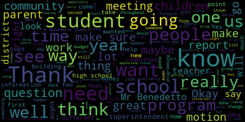

[DiBenedetto]: additional students that come from new developments.
[DiBenedetto]: And we requested our report be given to us in January.
[DiBenedetto]: I just want more detail about what was requested.
[DiBenedetto]: I think I said I would like
[DiBenedetto]: units of a hundred and above instead of the hundred and fifty and we would like to try to capture non school-aged children as well as school-aged children so we can pre-plan in our budget.
[DiBenedetto]: So I would like that noted in the minutes as well as on the back of our requested reports.
[DiBenedetto]: I have a few questions.
[DiBenedetto]: Certainly.
[DiBenedetto]: I don't know if Kirsten's here.
[DiBenedetto]: Kirsten?
[DiBenedetto]: Yeah, Kirsten.
[DiBenedetto]: Okay, so my first question is in tuition reimbursement features, I saw a lot of line items for that, and I just didn't know what the policy was for tuition reimbursement because just in this bill,
[DiBenedetto]: Approval we have seven thousand six hundred and eighty four dollars in tuition reimbursement for teachers.
[DiBenedetto]: I don't know how teachers apply for that I don't know how it's allocated
[DiBenedetto]: And could you just explain how teachers apply for that and how they've been notified that they have that option?
[DiBenedetto]: And now that you say that, I do remember approving that piece of the budget, and I'm glad to see it started.
[DiBenedetto]: Thank you.
[DiBenedetto]: I have a few more items.
[DiBenedetto]: My second item is on page three of 16.
[DiBenedetto]: It's for $3,395 and it says Medford High School miscellaneous charges.
[DiBenedetto]: Does anybody have a recollection as to what, and the payment was, the vendor was Medford High School, so I was just curious what that was.
[DiBenedetto]: Okay.
[DiBenedetto]: Hockey uniforms.
[DiBenedetto]: Okay, and the next item is number three.
[DiBenedetto]: An athletic official on page 11 of 16, an athletic official bill was paid $10,220.
[DiBenedetto]: That just seems so much higher than most of the other ones, and it just caught my eye.
[DiBenedetto]: Okay, I was just curious, because it said an individual for that large amount of money.
[DiBenedetto]: It just seemed worth bringing up.
[DiBenedetto]: And number four is on page 12 of 16.
[DiBenedetto]: It says net sports group $8,998, and it says the reason is unclassified.
[DiBenedetto]: So I was just wondering why that wasn't classified, and exactly what that was.
[DiBenedetto]: It's on page... Page 12.
[DiBenedetto]: Good thing to do.
[DiBenedetto]: Thank you for clarifying those questions.
[DiBenedetto]: Aye.
[DiBenedetto]: I requested to have separate rankings in quarterly meetings.
[DiBenedetto]: That's not exactly what I had motioned for.
[DiBenedetto]: What I had motioned for is a separate internal ranking, so that way we know which students in the vocational school and their class rank.
[DiBenedetto]: I believe that's how I remember it correctly.
[DiBenedetto]: And I also asked that a notation be presented on the transcript.
[DiBenedetto]: And if that's not possible,
[DiBenedetto]: then I strongly agree with my colleague that the heads of both schools as well as the guidance department needs to come to us and tell us that our motion isn't possible and to present us with what options are possible and how we're gonna move forward with this.
[DiBenedetto]: because this is a very important issue for our seniors and our juniors.
[DiBenedetto]: At least with our sophomores, we have time to notify them of this change.
[DiBenedetto]: It's still gonna be hard for that level, but at some point, we need to merge them in with the high school rankings, because we do have one code now, and that's how we report it.
[DiBenedetto]: but we need to make some adjustment for these two years, I believe, and that's why I made the motion, and that's why it was approved unanimously.
[DiBenedetto]: So I'm agreeing with my colleague's motion, and I hope that happens very quickly, because this is affecting students that are already sent out applications to colleges, so I motion that it be done immediately.
[DiBenedetto]: Could we warrant, would this warrant an emergency meeting?
[DiBenedetto]: Because of the timeliness with children's transcripts.
[DiBenedetto]: So as a school committee member, I'm making a motion that if they can't rectify this by the end of this week, that we have a meeting at the beginning of next week.
[DiBenedetto]: So I need someone to second that motion.
[DiBenedetto]: I'll second it.
[DiBenedetto]: There's a second by Ms.
[DiBenedetto]: Thank you.
[DiBenedetto]: So I didn't hear that the teachers were upset until I saw the large group outside tonight.
[DiBenedetto]: actually happy to see a lot of you because I haven't seen you in a few years because both my children graduated from the McGlynn Elementary and Middle School and then Medford High School.
[DiBenedetto]: So it was really nice to see you all and see you still dedicated and acting in such a group way, such a team building way to represent yourselves in such
[DiBenedetto]: A difficult thing.
[DiBenedetto]: I'm very sorry to hear that you felt slighted.
[DiBenedetto]: When my children were going into middle school, it was hoping that they would get into the McLean.
[DiBenedetto]: So, when I hear the difference now with the Andrews, you know, it's like we all say, it goes up and down at different sides.
[DiBenedetto]: To hear that you're educating 60% of the high needs students in our district in middle school, that's a lot.
[DiBenedetto]: 60% of your students in your school being high needs.
[DiBenedetto]: That's a tremendous job that you're doing every day and you're representing
[DiBenedetto]: in servicing children with very, very significant needs, and you're doing it really well, because if you weren't, I would have known that, right?
[DiBenedetto]: I would have known that and heard that, and that we would have had an issue.
[DiBenedetto]: We never hear of that.
[DiBenedetto]: The only thing we do hear is our friends are going to a different school, and the emotional impact that has on people's children, and that breaks my heart,
[DiBenedetto]: The social, emotional well-being of a child is so important to their education that we need to listen to how that's affecting people.
[DiBenedetto]: And all our intention was last week is to find ways to make the McGlynn, you know, their marketing, their PR, to let people know about the wonderful things and the wonderful teachers that you are.
[DiBenedetto]: so that parents are aware of it.
[DiBenedetto]: It wasn't to say, well, the Andrews better, how are we gonna make the McGlenn better?
[DiBenedetto]: We know you're better.
[DiBenedetto]: We never even thought for a second that you weren't better.
[DiBenedetto]: It's just maybe you need a little bit more PR.
[DiBenedetto]: Maybe your clubs need to be published a little bit more.
[DiBenedetto]: Maybe we need to have the paper there to celebrate some of your things.
[DiBenedetto]: In other ways, that's how I looked at it.
[DiBenedetto]: Or if you did need more money for clubs, I did that, I believe, last week.
[DiBenedetto]: Why not have that?
[DiBenedetto]: Maybe we need to do that and look at those type of things.
[DiBenedetto]: But it was never, never that more dedicated amount of money.
[DiBenedetto]: That is never.
[DiBenedetto]: And I am so grateful that you were comfortable enough to go forward and speak for yourselves in this manner that you thought that we had that impression.
[DiBenedetto]: And that's far from what I thought.
[DiBenedetto]: So, I am grateful to see you all.
[DiBenedetto]: I hope you understand that we are here to help in any way that we can.
[DiBenedetto]: And if you have ideas, we want you to bring them forward.
[DiBenedetto]: You're in the front line and you know better than anyone else in this room what you're doing every day and what needs to be celebrated and what needs to be sent out to the parents and the community as a whole.
[DiBenedetto]: So your input is most valuable.
[DiBenedetto]: And I'm always willing to hear that.
[DiBenedetto]: And I'm willing to make other people hear it.
[DiBenedetto]: Because I have a big mouth.
[DiBenedetto]: So welcome and thank you for coming.
[DiBenedetto]: And I'm sorry that if it was an impression that wasn't pleasant for you all.
[DiBenedetto]: Thank you, Mr. Benedetto.
[DiBenedetto]: Mr. Benedetto.
[DiBenedetto]: Mayor Burke, I'd like to make a motion that the administration meet with the teachers of the McGlen to go over some of these concerns and
[DiBenedetto]: come up with an action plan together and present the new action plan to the school committee in one month's time?
[DiBenedetto]: I need someone to second that motion.
[DiBenedetto]: Well, yes, but at the very least.
[DiBenedetto]: A meeting with them to work on a new action plan that needs to be presented.
[DiBenedetto]: Mr. Benedetto.
[DiBenedetto]: Thank you.
[DiBenedetto]: Thank you Mayberg and thank you Mr. McCullough.
[DiBenedetto]: First of all, I'd like to clarify, 60% of high need students is not special education students.
[DiBenedetto]: Those are students, when they take state level exams, they fall into different classifications, either ELL or different subgroups in that way.
[DiBenedetto]: So there's a lot of different combinations that could be.
[DiBenedetto]: So I just didn't realize that it was at 60% capacity.
[DiBenedetto]: I knew our needs levels were different, and I knew that they housed the ELL program,
[DiBenedetto]: So that would raise the number, but I just didn't know that it was at that point.
[DiBenedetto]: So just so everybody in the community knows, there's not 60% of the students at the McGlenn Middle School that are special education.
[DiBenedetto]: They just fall into either financial need, or ELL need, or different types of subcategories that are tested on standardized testing.
[DiBenedetto]: The second part about PR is, yes, we are all responsible for PR.
[DiBenedetto]: And as a school committee member, I myself feel that way too.
[DiBenedetto]: In any way I can help and do that, I am more than willing to do that.
[DiBenedetto]: And just to let the community know all the positives of both our middle schools.
[DiBenedetto]: And as far as going out and participating in the schools,
[DiBenedetto]: I was actually at the exercise group at the elementary school at the McGlynn last week trying to do hula hoop.
[DiBenedetto]: It didn't work out very well in my favor.
[DiBenedetto]: But I am trying to pop into different things throughout the community and just see what's going on.
[DiBenedetto]: So renew my own knowledge of each school too because my children have graduated and moved on and it's good to go back and I went to parent night at the high school as a freshman parent would.
[DiBenedetto]: and sat in the audience and just heard what questions were being done.
[DiBenedetto]: And I know myself that my colleagues attend a lot of different things, and a lot of them have school-age children and are in the buildings at all times.
[DiBenedetto]: And for me, I have to make more of an effort to do that because my children have graduated.
[DiBenedetto]: So as far as that goes, that's the issue.
[DiBenedetto]: And by requesting a meeting,
[DiBenedetto]: to have their input for a new improvement plan or updated plan, not really improvement plan.
[DiBenedetto]: A plan.
[DiBenedetto]: Just an action plan.
[DiBenedetto]: An action plan.
[DiBenedetto]: Sorry, it went out of my mind for a moment.
[DiBenedetto]: My motion was to have a meeting on that because I want the teachers at the table and I want to be at the table as well and I want the superintendent to be there because we all need to be heard, not just us up here.
[DiBenedetto]: and you were heard tonight, I hope you feel heard, in a different way, but with concrete items to talk about would be good.
[DiBenedetto]: And we might come out with the same or similar action plan in the end that's already been before us.
[DiBenedetto]: It's just that you might feel like you were heard and part of the process better, which is just always great.
[DiBenedetto]: So I'm hoping, and that's our goal.
[DiBenedetto]: And I agree with you that that needs to happen more and more often from this membership.
[DiBenedetto]: So thank you for bringing those concerns forward.
[DiBenedetto]: Most impressive person on the internet.
[DiBenedetto]: Thank you.
[DiBenedetto]: Mr. Benedetto.
[DiBenedetto]: Thanks, I had some questions.
[DiBenedetto]: Okay, so once you train everybody and they become a mentor, what do they do with that?
[DiBenedetto]: And how do other children know that they're
[DiBenedetto]: Okay, so is this for all clubs, or just like sports clubs?
[DiBenedetto]: Okay, so and then the students in those clubs know that certain students in the club are trained mentors, so if they have an issue, they go to them?
[DiBenedetto]: and thank you.
[DiBenedetto]: I was just wondering how that all works.
[DiBenedetto]: So like if two children have an issue, they know that there's a mentor in there.
[DiBenedetto]: Then if a student if someone comes looking for help from the student who does the student then go to does that be a pretty heavy topic for a teenager
[DiBenedetto]: Yes, thank you.
[DiBenedetto]: Mr. Benedetto.
[DiBenedetto]: Thank you.
[DiBenedetto]: So could any of these funds be helpful with us since the whole community uses the school parks like if we need to redo all the rubber and the
[DiBenedetto]: the school year, you know.
[DiBenedetto]: So we can put that request in right now.
[DiBenedetto]: We can start at each school each year and just keep rotating throughout forever.
[DiBenedetto]: I meant the school yards.
[DiBenedetto]: The school, yes.
[DiBenedetto]: The school yards where the play structures are to make them safer.
[DiBenedetto]: Yes, that is definitely included.
[DiBenedetto]: They are used all the time, evenings and weekends by the community and it would be really nice if
[DiBenedetto]: I just really wanted to congratulate you on working so hard.
[DiBenedetto]: Yes?
[DiBenedetto]: Mr. Benedetto?
[DiBenedetto]: I just have a question.
[DiBenedetto]: How do you decide?
[DiBenedetto]: Do you decide that as a committee?
[DiBenedetto]: based on all the input you've received throughout?
[DiBenedetto]: The hat, shirts.
[DiBenedetto]: I have the t-shirt in the car and all the other things that I go out to take home.
[DiBenedetto]: from many, many people there.
[DiBenedetto]: I also wanted to comment that Hallmark Health took my blood pressure and the machine wasn't working well, so the vocational technical high school took it and they were right on.
[DiBenedetto]: Is that people at tonight's meeting or afternoon?
[DiBenedetto]: It was actually low that evening because I kept missing you in the crowd.
[DiBenedetto]: Let's keep it that way.
[DiBenedetto]: Aye.
[DiBenedetto]: Getting back to the report at hand, so through this report, it looked like you might have been leading up to maybe staff changes and more people to run the school brains.
[DiBenedetto]: That's how I read it and so I had some questions like who already did our state reporting in the past and are they the point person for school brains at this point is this
[DiBenedetto]: Once they're up and trained isn't this going to streamline things?
[DiBenedetto]: So there'll be less people once the data is ended initially and it's correct and updated by parents through the porthole and portal not porthole portal and Sorry, it's been a long day
[DiBenedetto]: Once that initial work is done and then people are trained in it, isn't it going to be much more efficient and accurate and we won't need additional staff because we'll have a good beginning?
[DiBenedetto]: Mr. Benedetto.
[DiBenedetto]: I'm gonna request that when we do meet and discuss that, we have like a layout of the administrative and the staffing, like who reports to who, what job they do, what their position is, what their salary is, like all of that data and information on like a graph so we see that and that way we can see the needs.
[DiBenedetto]: And it also helps tighten up what they're responsible for and who they directly report to.
[DiBenedetto]: So, when you do bring that to our attention, that's what I hope it looks like.
[DiBenedetto]: I'm going to leave it at that at this point.
[DiBenedetto]: I think there's been a lot of motions for you tonight, so I'm not going to make any motions, but just an idea.
[DiBenedetto]: Very good.
[DiBenedetto]: Mr. Benedetto.
[DiBenedetto]: Thank you.
[DiBenedetto]: Do we have any data on non-athletic concussions?
[DiBenedetto]: An example is today at my school, at 745, we had an eighth grader trip and fall and fall into the wall.
[DiBenedetto]: And he was out.
[DiBenedetto]: So, I called the, you know, the nurse wasn't available, so I had to call 911.
[DiBenedetto]: So, I mean, that was a non-athletic concussion, possible concussion.
[DiBenedetto]: Because we want to make sure that even our clumsy students, no, no.
[DiBenedetto]: Right, especially because those students also go back into classrooms as well and have to be cleaned in that way.
[DiBenedetto]: Exactly.
[DiBenedetto]: And the whole process has to be the same for those.
[DiBenedetto]: So maybe that might be something we need to keep data on in the future so when it's presented we have all students' data, not just athletic students.
[DiBenedetto]: Thank you.
[DiBenedetto]: Thank you.
[DiBenedetto]: I had a question on... So, we were talking about...
[DiBenedetto]: additional students that come from new developments.
[DiBenedetto]: And we requested our report be given to us in January.
[DiBenedetto]: I just want more detail about what was requested.
[DiBenedetto]: I think I said I would like
[DiBenedetto]: units of a hundred and above instead of the hundred and fifty and we would like to try to capture non school-aged children as well as school-aged children so we can pre-plan in our budget.
[DiBenedetto]: So I would like that noted in the minutes as well as on the back of our requested reports.
[DiBenedetto]: Kirsten Kirsten's not here, but I Okay, so my first question is in tuition reimbursement features I saw a lot of line items for that and I just didn't know what the policy was for tuition reimbursement because just in this bill Approval we have seven thousand six hundred and eighty four dollars in tuition reimbursement for teachers I don't know how teachers apply for that.
[DiBenedetto]: I don't know how it's allocated
[DiBenedetto]: And could you just explain how teachers apply for that and how they've been notified that they have that option?
[DiBenedetto]: And now that you say that, I do remember approving that piece of the budget, and I'm glad to see it started.
[DiBenedetto]: Thank you.
[DiBenedetto]: I have a few more items.
[DiBenedetto]: My second item is on page 3 of 16.
[DiBenedetto]: It's for $3,395 and it says Medford High School miscellaneous charges.
[DiBenedetto]: Does anybody have a recollection as to what and the payment was the vendor was method high school So I was just curious what that was this is for the hockey clothing, okay?
[DiBenedetto]: Hockey uniforms
[DiBenedetto]: Okay, and the next item is number three.
[DiBenedetto]: An athletic official on page 11 of 16, an athletic official bill was paid $10,220.
[DiBenedetto]: That just seems so much higher than most of the other ones, and it just caught my eye.
[DiBenedetto]: Okay, I was just curious, because it said an individual for that large amount of money, just seemed worth bringing up.
[DiBenedetto]: And number four is on page 12 of 16.
[DiBenedetto]: It says net sports group $8,998, and it says the reason is unclassified.
[DiBenedetto]: So I was just wondering why that wasn't classified, and exactly what that was.
[DiBenedetto]: It's on page... Page 12.
[DiBenedetto]: Good thing to do.
[DiBenedetto]: Thank you for clarifying those questions.
[DiBenedetto]: Aye.
[DiBenedetto]: I requested to have separate rankings in quarterly meetings.
[DiBenedetto]: That's not exactly what I had motioned for.
[DiBenedetto]: What I had motioned for is a separate internal ranking, so that way we know which students in the vocational school and their class rank.
[DiBenedetto]: I believe that's how I remember it correctly.
[DiBenedetto]: And I also asked that a notation be presented on the transcript.
[DiBenedetto]: And if that's not possible,
[DiBenedetto]: then I strongly agree with my colleague that the heads of both schools as well as the guidance department needs to come to us and tell us that our motion isn't possible and to present us with what options are possible and how we're going to move forward with this.
[DiBenedetto]: because this is a very important issue for our seniors and our juniors.
[DiBenedetto]: At least with our sophomores, we have time to notify them of this change.
[DiBenedetto]: It's still gonna be hard for that level, but at some point, we need to merge them in with the high school rankings, because we do have one code now, and that's how we report it.
[DiBenedetto]: but we need to make some adjustment for these two years, I believe, and that's why I made the motion, and that's why it was approved unanimously.
[DiBenedetto]: So I'm agreeing with my colleague's motion, and I hope that happens very quickly, because this is affecting students that are already sent out applications to colleges, so I motion that it be done immediately.
[DiBenedetto]: Could we warrant, would this warrant an emergency meeting because of the timeliness with children's transcripts?
[DiBenedetto]: So as a school committee member, I'm making a motion that if they can't rectify this by the end of this week that we have
[DiBenedetto]: meeting at the beginning of next week.
[DiBenedetto]: So I need someone to second that motion.
[DiBenedetto]: I'll second it.
[DiBenedetto]: Thank you.
[DiBenedetto]: So I didn't hear that the teachers were upset until I saw the large group outside tonight,
[DiBenedetto]: actually happy to see a lot of you because I haven't seen you in a few years because both my children graduated from the McGlynn Elementary and Middle School and then Medford High School.
[DiBenedetto]: So it was really nice to see you all and see you still dedicated and acting in such a group way, such a team building way to represent yourselves in such a
[DiBenedetto]: A difficult thing.
[DiBenedetto]: I'm very sorry to hear that you felt slighted.
[DiBenedetto]: When my children were going into middle school, it was hoping that they would get into the McLean.
[DiBenedetto]: So, when I hear the difference now with the Andrews, you know, it's like we all say, it goes up and down at different sides.
[DiBenedetto]: To hear that you're educating 60% of the high needs students in our district in middle school, that's a lot.
[DiBenedetto]: 60% of your students in your school being high needs.
[DiBenedetto]: That's a tremendous job that you're doing every day and you're representing
[DiBenedetto]: in servicing children with very, very significant needs, and you're doing it really well, because if you weren't, I would have known that, right?
[DiBenedetto]: I would have known that and heard that, and that we would have had an issue.
[DiBenedetto]: We never hear of that.
[DiBenedetto]: The only thing we do hear is our friends are going to a different school, and you know, the emotional impact that has on people's children, and that breaks my heart,
[DiBenedetto]: the social emotional well-being of a child is so important to their education that we need to listen to how that's affecting people.
[DiBenedetto]: And all our intention was last week is to find ways to make the McGlynn, their marketing, their PR, to let people know about the wonderful things and the wonderful teachers that you are.
[DiBenedetto]: so that parents are aware of it.
[DiBenedetto]: It wasn't to say, well, the Andrews is better, how are we gonna make the McGlenn better?
[DiBenedetto]: We know you're better.
[DiBenedetto]: We never even thought for a second that you weren't better.
[DiBenedetto]: It's just maybe you need a little bit more PR.
[DiBenedetto]: Maybe your clubs need to be published a little bit more.
[DiBenedetto]: Maybe we need to have the paper there to celebrate some of your things.
[DiBenedetto]: In other ways, that's how I looked at it.
[DiBenedetto]: Or, if you did need more money for clubs, I did that, I believe, last week.
[DiBenedetto]: I don't know why I don't have that.
[DiBenedetto]: Maybe we need to do that, and look at those type of things.
[DiBenedetto]: But it was never, never that you were dedicated and wonderful, because that has never come to any of our attention.
[DiBenedetto]: And I am so grateful that you were comfortable enough to go forward and speak for yourselves in this manner, that you thought that we had that impression.
[DiBenedetto]: And that's far from what I thought.
[DiBenedetto]: So, I am grateful to see you all.
[DiBenedetto]: I hope you understand that we are here to help in any way that we can.
[DiBenedetto]: And if you have ideas, we want you to bring them forward.
[DiBenedetto]: You're in the front line and you know better than anyone else in this room what you're doing every day and what needs to be celebrated and what needs to be sent out to the parents and the community as a whole.
[DiBenedetto]: So your input is most valuable.
[DiBenedetto]: And I'm always willing to hear that.
[DiBenedetto]: And I'm willing to make other people hear it.
[DiBenedetto]: Because I have a big mouth.
[DiBenedetto]: So welcome and thank you for coming.
[DiBenedetto]: And I'm sorry that if it was an impression that wasn't pleasant for you all.
[DiBenedetto]: Thank you, Mr. Benedetto.
[DiBenedetto]: Mr. Benedetto.
[DiBenedetto]: Mayor Burke, I'd like to make a motion that the administration meet with the teachers of the McGlynn to go over some of these concerns and come up with an action plan together and present the new action plan to the school committee in one month's time.
[DiBenedetto]: I need someone to second that motion.
[DiBenedetto]: Second.
[DiBenedetto]: Well, yes, but at the very least, a meeting with them to work on a new action plan that needs to be presented.
[DiBenedetto]: Second.
[DiBenedetto]: First of all, I'd like to clarify, 60% of high need students is not special education students.
[DiBenedetto]: Those are students, when they take state level exams, they fall into different classifications, either ELL or different subgroups in that way.
[DiBenedetto]: So there's a lot of different combinations that could be.
[DiBenedetto]: So I just didn't realize that it was at 60% capacity.
[DiBenedetto]: I knew our needs levels were different, and I knew that they housed the ELL program.
[DiBenedetto]: So that would raise the number, but I just didn't know that it was at that point.
[DiBenedetto]: So just so everybody in the community knows, there's not 60% of the students at the McGlenn Middle School that are special education.
[DiBenedetto]: They just fall into either financial need, or ELL need, or different types of subcategories that are tested on standardized testing.
[DiBenedetto]: The second part about PR is yes, we are all responsible for PR.
[DiBenedetto]: And as a school committee member, I myself feel that way too.
[DiBenedetto]: In any way I can help and do that, I am more than willing to do that.
[DiBenedetto]: And just to let the community know all the positives of both our middle schools.
[DiBenedetto]: And as far as going out and
[DiBenedetto]: participating in the schools.
[DiBenedetto]: I was actually at the exercise group at the elementary school at the McGlynn last week trying to do hula hoop.
[DiBenedetto]: It didn't work out very well in my favor.
[DiBenedetto]: But I am trying to like pop into different things throughout the community and just see what's going on.
[DiBenedetto]: So like renew my own knowledge of each school too because my children have graduated and moved on and it's good to go back and
[DiBenedetto]: I went to parent night up at the high school as a freshman parent would and sat in the audience and just heard what questions were being done.
[DiBenedetto]: So I know myself that my colleagues attend a lot of different things and a lot of them have school age children and are in the buildings at all times.
[DiBenedetto]: And for me I have to make more of an effort to do that because my children have graduated.
[DiBenedetto]: So as far as that goes, that's the issue.
[DiBenedetto]: By requesting a meeting.
[DiBenedetto]: to have their input for a new improvement plan or updated plan, not really improvement plan.
[DiBenedetto]: A plan.
[DiBenedetto]: Just a plan.
[DiBenedetto]: An action plan.
[DiBenedetto]: Sorry, it went out of my mind for a moment.
[DiBenedetto]: My motion was to have a meeting on that because I want the teachers at the table and I want to be at the table as well and I want the superintendent to be there because we all need to be heard, not just us up here.
[DiBenedetto]: and you were heard tonight, I hope you feel heard, in a different way, but with concrete items to talk about would be good.
[DiBenedetto]: And we might come up with the same or similar action plan in the end that's already been before us.
[DiBenedetto]: It's just that you might feel like you were heard and part of the process better, which is just always great.
[DiBenedetto]: So I'm hoping, and I agree with you that that needs to happen more and more often from this membership.
[DiBenedetto]: So thank you for bringing those concerns forward.
[DiBenedetto]: Thank you.
[DiBenedetto]: Mr. Benedetto.
[DiBenedetto]: Thanks, I had some questions.
[DiBenedetto]: Okay, so once you train everybody and they become a mentor, what do they do with that?
[DiBenedetto]: And how do other children know that they're
[DiBenedetto]: Okay, so is this for all clubs, or just like sports clubs?
[DiBenedetto]: No, all clubs.
[DiBenedetto]: Okay, so and then the students in those clubs know that certain students in the club are trained mentors, so if they have an issue, they go to them?
[DiBenedetto]: And thank you.
[DiBenedetto]: I was just wondering how that all works.
[DiBenedetto]: So if two children have an issue, they know that there's a mentor in it.
[DiBenedetto]: Great, thanks.
[DiBenedetto]: That's why I was just wondering how it actually happened that people knew about it.
[DiBenedetto]: Thank you.
[DiBenedetto]: You're welcome.
[DiBenedetto]: Motion to approve.
[DiBenedetto]: Second.
[DiBenedetto]: Ms.
[DiBenedetto]: Stone.
[DiBenedetto]: Thank you.
[DiBenedetto]: Thank you.
[DiBenedetto]: Mr. Benedetto.
[DiBenedetto]: Thank you.
[DiBenedetto]: So could any of these funds be helpful with us since the whole community uses the school parks?
[DiBenedetto]: like if we need to redo all the rubber in the school yard, you know.
[DiBenedetto]: So we can put that request in right now.
[DiBenedetto]: We can start at each school each year and just keep rotating throughout.
[DiBenedetto]: forever?
[DiBenedetto]: I meant the schoolyards.
[DiBenedetto]: The schoolyards, where the play structures are.
[DiBenedetto]: Yes, that is definitely included.
[DiBenedetto]: They are used all the time, evenings and weekends by the community and it would be really nice if we were first on the list.
[DiBenedetto]: Yes?
[DiBenedetto]: I just have a question.
[DiBenedetto]: How do you decide?
[DiBenedetto]: Do you decide that as a committee?
[DiBenedetto]: based on all the input you've received throughout?
[DiBenedetto]: I have the t-shirt in the car and all the other things that I go out to take home.
[DiBenedetto]: from many, many people there.
[DiBenedetto]: I also wanted to comment that Hallmark Health took my blood pressure, and the machine wasn't working well, so the vocational technical high school took it, and they were right on.
[DiBenedetto]: Was it good?
[DiBenedetto]: Yeah, mine too.
[DiBenedetto]: You're healthy.
[DiBenedetto]: Yep.
[DiBenedetto]: Yep.
[DiBenedetto]: It was actually low that evening, because I kept missing you in the crowd.
[DiBenedetto]: Let's keep it that way.
[DiBenedetto]: Aye.
[DiBenedetto]: Mr. Benedetto.
[DiBenedetto]: Getting back to the report at hand, so through this report, it looked like you might have been leading up to maybe staff changes and more people to run the school brains.
[DiBenedetto]: That's how I read it.
[DiBenedetto]: And so I had some questions like who already did our state reporting in the past and are they the point person for school brains at this point?
[DiBenedetto]: Is this
[DiBenedetto]: Once they're up and trained isn't this going to streamline things so that way there'll be less people once the data is entered initially and it's correct and updated by parents through the porthole and portal not porthole portal and Sorry, it's been a long day
[DiBenedetto]: Once that initial work is done and then people are trained in it, isn't it going to be much more efficient and accurate and we won't need additional staff because we'll have a good beginning?
[DiBenedetto]: I'm gonna request that when we do meet and discuss that we have like a layout of the administrative and the staffing yeah like who reports to who what job they do what what their position is what their salary is like
[DiBenedetto]: like all of that data and information on like a graph so we see that and that way we can see the needs.
[DiBenedetto]: And it also helps tighten up what they're responsible for and who they directly report to.
[DiBenedetto]: So when you do bring that to our attention, that's what I hope it looks like.
[DiBenedetto]: I'll leave it at that at this point.
[DiBenedetto]: I think there's been a lot of motions for you tonight.
[DiBenedetto]: I'm not gonna make any motions, but just an idea.
[DiBenedetto]: Very good.
[DiBenedetto]: Mr. Benedetto.
[DiBenedetto]: Thank you.
[DiBenedetto]: Do we have any data on non-athletic concussions?
[DiBenedetto]: An example is today at my school, at 745, we had an eighth grader trip and fall and fall into the wall.
[DiBenedetto]: And he was out.
[DiBenedetto]: So, I called the, you know, the nurse wasn't available, so I had to call 911.
[DiBenedetto]: So, I mean, that was a non-athletic concussion, possible concussion.
[DiBenedetto]: Because we want to make sure that even our clumsy students, no, no.
[DiBenedetto]: Right, especially because those students also go back into classrooms as well and have to be cleared in that way.
[DiBenedetto]: And the whole process has to be the same for those.
[DiBenedetto]: So maybe that might be something we need to keep data on in the future, so when it's presented we have all students' data, not just athletic students.
[DiBenedetto]: Thank you.
[DiBenedetto]: Thank you.
[DiBenedetto]: Mr. Benedetto?
[DiBenedetto]: Thank you.
[DiBenedetto]: Could you tell me what the percentage of the forms returned are for each building?
[DiBenedetto]: Do you know that?
[DiBenedetto]: So the free and reduced eligibility?
[DiBenedetto]: Yeah, whether they sign that they need it or they return the form saying that they're not eligible but they have to sign their form.
[DiBenedetto]: Does every student sign have a form returned?
[DiBenedetto]: No.
[DiBenedetto]: And how do we get like two parents that
[DiBenedetto]: don't know what this is and it's coming home and they're not knowing to turn them back in and get the quote we need because that would change a lot and do parents know that this also reflects in whether or not they pay for SAT exams as well as college applications.
[DiBenedetto]: Their free and reduced lunch has bigger implications other than just foods on a daily basis.
[DiBenedetto]: And I don't think, like up at the high school, you might not get any forms, but if they knew that that was tied in and there was like a campaign to really educate people throughout the community, I think that our numbers could actually be higher than what they're listed here.
[DiBenedetto]: Right.
[DiBenedetto]: So that that's concerning to me and I think we have to have like almost 100% return rate for building and like really make it like a campaign or part of re-registration at each year.
[DiBenedetto]: So that way we we are making sure we capture hungry families as well as giving all those alternative
[DiBenedetto]: processes.
[DiBenedetto]: So I would really like to know how many forms were returned per school, like broken down by school, as well as a plan for outreach for next year, so that way we are reaching every family.
[DiBenedetto]: They either sign off yes or they sign off no.
[DiBenedetto]: I know it's a big job and a big undertaking, but I think it's well worth it in the community because I don't think people
[DiBenedetto]: especially non-English families knowing that there are other things that this qualifies them for and it's so important to make sure that they get food.
[DiBenedetto]: And my point, too, is sometimes there's awards for 100% return rate for classes.
[DiBenedetto]: They get really getting the word out and being a campaign so that the word goes home and people are excited and learning about it because they don't pay attention to every form.
[DiBenedetto]: And it's so important to feed our children.
[DiBenedetto]: And it's so important for kids that say, oh, we don't have money for our college applications.
[DiBenedetto]: I'm not applying.
[DiBenedetto]: you know, the tests are covered and the applications are cheaper and like it's so many, many more aspects of this, as well as our district could receive more federal funding because of our percentage rates.
[DiBenedetto]: That's just a suggestion.
[DiBenedetto]: I think I made it maybe last year as well.
[DiBenedetto]: Motion to have that report presented to the school committee.
[DiBenedetto]: Thank you, Miss Vanderpool.
[DiBenedetto]: Mayor Burke, we'll report on student survey before our nutritionist leaves.
[DiBenedetto]: I saw on some social media that the Columbus School was talking about maybe sour milk at some of the things and asked that they just look into that.
[DiBenedetto]: I saw on some social media at the McGlen and definitely at the Columbus, I saw some posts about children not taking the milk because they felt the milk was sour.
[DiBenedetto]: I heard that students are doing it in classrooms because it looks like just a USB and they also like can even exhale right into the hoodies and you don't even see anything.
[DiBenedetto]: So kids in class are actually, they call it drooling.
[DiBenedetto]: Do we have a vaping policy on the books or are we using the tobacco policy?
[DiBenedetto]: Well with the growth I see throughout not just our community but socially and adults as well as high school age students I would like for this committee to start working on that so that way it's in our handbooks as vaping
[DiBenedetto]: as jeweling, as the correct terminology, so students are very clear how we as adults feel in this community about this, because students just do not believe, they think that, oh, I quit smoking, I'm only vaping now, and that's what you hear, and they don't realize when it gets in their lungs, it's like popcorn, and it blows up their lungs, and it does all these health implications, and there's not a lot of data because they haven't been doing it for years, but having,
[DiBenedetto]: Two people in my house who read this report before I got here, almost 27 and almost 25.
[DiBenedetto]: One's a future NP and one works in another community on these exact programs.
[DiBenedetto]: They were happy to see our numbers.
[DiBenedetto]: that we're doing a great job in MedFed.
[DiBenedetto]: We want to be clear, call it what it is, name it, say it's not okay, and tell them that from day one, so that way the wording is correct.
[DiBenedetto]: Because once you name something, it's not like this secret thing anymore.
[DiBenedetto]: It's not as fun.
[DiBenedetto]: So that's a motion on on the floor and I need a second second my colleagues.
[DiBenedetto]: I'd like to see this in place and in every handbook at every at our junior high and high school level by next year.
[DiBenedetto]: So that parents know that this is happening in our community and that we're taking it seriously and we're not going to we're not going to continue.
[DiBenedetto]: Mr. Benedetto.
[DiBenedetto]: So when you're doing that training this year for CPI or first aid, can we add back in training that's already in it?
[DiBenedetto]: And is that for both the high school and the vocational seniors?
[DiBenedetto]: So so that's great.
[DiBenedetto]: I think that's wonderful.
[DiBenedetto]: And I think Mr. Turgali.
[DiBenedetto]: Can I ask a point of clarification?
[DiBenedetto]: Thank you.
[DiBenedetto]: So you said the key point cameras.
[DiBenedetto]: Does that mean all cameras are now online and working or just key point?
[DiBenedetto]: Two weeks.
[DiBenedetto]: And then all cameras within the district will be up and running and functioning appropriately?
[DiBenedetto]: Just as another follow-up, I know that Attorney Bill O'Keefe offered to supply us with extra cameras, and even if we have them as a stash of backup cameras, he's more than willing to donate them.
[DiBenedetto]: He has in the past, and he has more to donate.
[DiBenedetto]: So I'm making a motion now.
[DiBenedetto]: that the superintendent reach out to him and just see if they're functioning with our system now and if it's appropriate to have them as backup cameras.
[DiBenedetto]: All right.
[DiBenedetto]: I also make a motion to send him a thank you note.
[DiBenedetto]: Consistently over the years providing us with any technology that comes to his hands.
[DiBenedetto]: So that was the security issue I was I wanted some clarity on the business office team and now that it's fully staffed What types of movement will happen were there any positions added like I'm just curious I know we talked about HR person at one point the superintendent mentioned something like that I just was wondering what what that looks like now or maybe we could even get like, you know, a workshop plan.
[DiBenedetto]: Yeah.
[DiBenedetto]: Thank you
[DiBenedetto]: Can we see that chart anyway, just so, as committee members, we have an idea of what the roles are, who's in, like, who's in those roles.
[DiBenedetto]: Yeah, that would be helpful, because if we have any questions moving forward, of course we'd go to the superintendent, but, you know, it's just to know.
[DiBenedetto]: Names and job titles.
[DiBenedetto]: Yeah, that would be great.
[DiBenedetto]: Thank you.
[DiBenedetto]: I just also want to speak about the community schools budget, and I know that the committee approved almost two years ago about having it quarterly, so just as a friendly reminder that I'd like to see that coming forward soon.
[DiBenedetto]: Thank you very much.
[DiBenedetto]: Maybe we can even add it to the list of items on the back of our agenda so we don't forget, because I might forget if it's not written.
[DiBenedetto]: Thank you.
[DiBenedetto]: Mr. Benedetto.
[DiBenedetto]: First of all, thank you for making all the changes I brought forward at that meeting.
[DiBenedetto]: I'm just hoping that that statement about the method of public schools is committed to ensuring that the district field trips are accessible to all students.
[DiBenedetto]: The policy adheres to all requirements set forth by both Section 504 Rehabilitation Act and American Disability Act meets the needs that were brought up by other people at that meeting.
[DiBenedetto]: I think it does.
[DiBenedetto]: I think it's very appropriate.
[DiBenedetto]: I did research And I just wanted to comment that I hope that Does meet that need and thank you for adding that in as well as making the changes I brought forward The only other thing I have is I was hoping to see an example of the form that teachers and staff would meet And I wanted to you know
[DiBenedetto]: make sure that it's on online so it goes from one person gets signed off by the nurses then goes to the administration and then finally signed off by the superintendent in electronic forum format.
[DiBenedetto]: So I would like to see and approve that form.
[DiBenedetto]: And also an example of the medication administration slash delegation form that the district uses.
[DiBenedetto]: I'd like to see that as well.
[DiBenedetto]: So it's here all in one shot.
[DiBenedetto]: So if parents ever want to see what's the policy, they have the sample forms, they have everything right here, part of this packet.
[DiBenedetto]: So I'm asking that this be revised and brought to us with those intact, because that was what was requested at our last meeting for my notes.
[DiBenedetto]: Can I ask a question?
[DiBenedetto]: At least we have a policy in place.
[DiBenedetto]: The forms need to be approved.
[DiBenedetto]: I want them district-wide this specific thing So it's hard to approve something based on without having everything at one point I do like everything is in here that we need in here, but I How long would it take to get the forms to us and be presented we have a lot of meetings coming up I mean They have to be k-12
[DiBenedetto]: Mr. Benedetto, follow up on this?
[DiBenedetto]: Yes, please.
[DiBenedetto]: So the form I'm looking at is the application to go on the field trip.
[DiBenedetto]: Not so much all the forms that all parents have to do, but even the application form.
[DiBenedetto]: Okay, I want to take my second grade class to apple picking at, you know, small farms.
[DiBenedetto]: And so I'm going to go online, I'm going to fill this out, it's going to go to the nurse, and it's going to go to my head, you know, my principal and the superintendent for approval.
[DiBenedetto]: That's the type of form I want.
[DiBenedetto]: From the teacher.
[DiBenedetto]: From everyone.
[DiBenedetto]: And I want it tracked, so I want to know, I want data next year saying, this is where they went.
[DiBenedetto]: This grade over here went on five field trips, whereas this school over here hasn't.
[DiBenedetto]: And maybe as a district, we might want to help them.
[DiBenedetto]: or, you know, I want that data.
[DiBenedetto]: So that's the form that I, I don't need every single form at this point, but I want, when you roll this out, okay, here's our new thing, and this is how you apply.
[DiBenedetto]: I want it to go with it.
[DiBenedetto]: If you just do that one.
[DiBenedetto]: So the form that starts the process.
[DiBenedetto]: This is just for teachers to fill out an application to take the class.
[DiBenedetto]: Mr. Benedetto?
[DiBenedetto]: Thank you.
[DiBenedetto]: Could you tell me what the percentage of the forms returned are for each building?
[DiBenedetto]: Do you know that?
[DiBenedetto]: So the free and reduced eligibility?
[DiBenedetto]: Yeah, whether they sign that they need it or they return the form saying that they're not eligible but they have to sign their form.
[DiBenedetto]: Does every student sign have a form returned?
[DiBenedetto]: No.
[DiBenedetto]: And how do we get, like, two parents that
[DiBenedetto]: don't know what this is and it's coming home and they're not knowing to turn them back in and get the quote we need.
[DiBenedetto]: Because that would change a lot.
[DiBenedetto]: And do parents know that this also reflects in whether or not they pay for SAT exams as well as college applications.
[DiBenedetto]: Their free and reduced lunch has bigger implications other than just foods on a daily basis.
[DiBenedetto]: And I don't think, like up at the high school, you might not get any kids with learning forms, but if they knew that that was tied in and there was like a campaign to really educate people throughout the community, I think that our numbers could actually be higher than what they're listed here.
[DiBenedetto]: Right.
[DiBenedetto]: So that that's concerning to me and I think we have to have like almost a hundred percent return rate for building and like really make it like a campaign or part of re-registration at each year.
[DiBenedetto]: So that way we we are making sure we capture hungry families as well as giving all those alternative
[DiBenedetto]: processes, so I would really like to know how many forms were returned per school, like broken down by school, as well as a plan for outreach for next year, so that way we are reaching every family.
[DiBenedetto]: They either sign off yes or they sign off no.
[DiBenedetto]: I know it's a big job and a big undertaking, but I think it's well worth it in the community because I don't think people
[DiBenedetto]: especially non-English families.
[DiBenedetto]: Right.
[DiBenedetto]: Knowing that there are other things that this qualifies them for is so important to make sure they get food.
[DiBenedetto]: And my point, too, is sometimes there's awards for 100% return rate for classes.
[DiBenedetto]: They get really getting the word out and being a campaign so that the word goes home and people are excited and learning about it because they don't pay attention to every form.
[DiBenedetto]: And it's so important to feed our children.
[DiBenedetto]: And it's so important for kids that say, oh, we don't have money for our college applications.
[DiBenedetto]: I'm not applying.
[DiBenedetto]: you know, the tests are covered and the applications are cheaper, and like, it's so many, many more aspects of this, as well as our district could receive more federal funding because of our percentage rates.
[DiBenedetto]: That's just a suggestion.
[DiBenedetto]: I think I made it maybe last year as well.
[DiBenedetto]: motion.
[DiBenedetto]: Motion to have that report presented to the school committee.
[DiBenedetto]: Thank you.
[DiBenedetto]: Ms.
[DiBenedetto]: Vandevoort.
[DiBenedetto]: Um, I, I saw on, um, some social media that, um, the Columbus School was talking about maybe sour milk at some of the things and asked that, that, that they just look into that.
[DiBenedetto]: I saw on some social media about it at the McGlen and, and definitely at the Columbus.
[DiBenedetto]: I saw some, uh, posts about children not taking the milk because they felt the milk was sour.
[DiBenedetto]: I heard that students are doing it in classrooms because it looks like just a USB.
[DiBenedetto]: And they also can even exhale right into their hoodies, and you don't even see anything.
[DiBenedetto]: So kids in class are actually, they call it dueling.
[DiBenedetto]: Are we using the tobacco policy?
[DiBenedetto]: Well, with the growth I see throughout not just our community, but socially, in adults as well as
[DiBenedetto]: high school age students, I would like for this committee to start working on that so that way it's in our handbooks as vaping, as juuling, as the correct terminology so students are very clear how we as adults feel.
[DiBenedetto]: in this community about this, because students just do not believe.
[DiBenedetto]: They think that, oh, I quit smoking, I'm only vaping now.
[DiBenedetto]: And that's what you hear.
[DiBenedetto]: And they don't realize when it gets in their lungs, it's like popcorn and it blows up their lungs and it does all these health implications.
[DiBenedetto]: And there's not a lot of data because they haven't been doing it for years, but having
[DiBenedetto]: Two people at my house who read this report before I got here, almost 27 and almost 25.
[DiBenedetto]: One's a future NP and one works in another community on these exact programs.
[DiBenedetto]: They were happy to see our numbers.
[DiBenedetto]: that we're doing a great job in MedFed.
[DiBenedetto]: We want to be clear, call it what it is, name it, say it's not okay, and tell them that from day one so that way the wording is correct.
[DiBenedetto]: Because once you name something, it's not like this secret thing anymore.
[DiBenedetto]: So that's a motion on the floor, and I need a second from one of my colleagues.
[DiBenedetto]: I'd like to see this in place and in every handbook at our junior high and high school level by next year so that parents know that this is happening in our community and that we're taking it seriously and we're not going to continue.
[DiBenedetto]: Mr. Benedetto?
[DiBenedetto]: So when you're doing that training this year for CPI or First Aid, can we add a back-end training?
[DiBenedetto]: It's already in it.
[DiBenedetto]: It's already there.
[DiBenedetto]: And is that for both the high school and the vocational school?
[DiBenedetto]: Yes, it is seniors.
[DiBenedetto]: So that's great.
[DiBenedetto]: I think that's wonderful.
[DiBenedetto]: And I think that's wonderful.
[DiBenedetto]: Can I ask a point of clarification?
[DiBenedetto]: Thank you.
[DiBenedetto]: So you said the key point cameras.
[DiBenedetto]: Does that mean all cameras are now online and working or just key point?
[DiBenedetto]: Two weeks.
[DiBenedetto]: And then all cameras within the district will be up and running and functioning appropriately?
[DiBenedetto]: Just as another follow-up, I know that Attorney Bill O'Keefe offered to supply us with extra cameras, and even if we have them as a stash of backup cameras, he's more than willing to donate them.
[DiBenedetto]: He has in the past, and he has more to donate.
[DiBenedetto]: So I'm making a motion now.
[DiBenedetto]: that the superintendent reach out to him and just see if they're functioning with our system now and if it's appropriate to have them as backup cameras.
[DiBenedetto]: All right.
[DiBenedetto]: I also make a motion to send him a thank you note.
[DiBenedetto]: Consistently over the years providing us with any technology that comes to his gifts.
[DiBenedetto]: So that was the security issue I was I wanted some clarity on the business office team and now that it's fully staffed What types of movement will happen were there any positions added like I'm just curious I know we talked about HR person at one point the superintendent mentioned something like that I just was wondering what what that looks like now, or maybe we could even get like you know a workshop plan.
[DiBenedetto]: Yeah, thank you
[DiBenedetto]: Can we see that chart anyway, just so the committee members, we have an idea of what the roles are, who's in those roles.
[DiBenedetto]: Yeah, that would be helpful, because if we have any questions moving forward, of course we'd go to the superintendent, but you know, it's just to know.
[DiBenedetto]: Names and job titles.
[DiBenedetto]: Yeah, that would be great.
[DiBenedetto]: Thank you.
[DiBenedetto]: I just also want to speak about the community schools budget.
[DiBenedetto]: And I know that the committee approved almost two years ago about having it quarterly.
[DiBenedetto]: So just as a friendly reminder that I'd like to see that coming forward soon.
[DiBenedetto]: We will.
[DiBenedetto]: Thank you very much.
[DiBenedetto]: Maybe we can even add it to the list of items on the back of our agenda so we don't forget.
[DiBenedetto]: Because I might forget if it's not written.
[DiBenedetto]: Thank you.
[DiBenedetto]: You never know, it could happen.
[DiBenedetto]: Thank you very much.
[DiBenedetto]: Mr. Benedetto.
[DiBenedetto]: First of all, thank you for making all the changes I brought forward at that meeting.
[DiBenedetto]: I'm just hoping that that statement about the method of public schools is committed to ensuring that the district field trips are accessible to all students.
[DiBenedetto]: The policy adheres to all requirements set forth by both Section 504, Rehabilitation Act and American Disability Act meets the needs that were brought up by other people at that meeting.
[DiBenedetto]: I think it does.
[DiBenedetto]: I think it's very appropriate.
[DiBenedetto]: And I just wanted to comment that I hope that that does meet that need, and thank you for adding that in, as well as making the changes I brought forward.
[DiBenedetto]: The only other thing I have is I was hoping to see an example of the form that teachers and staff would meet, and I wanted to, you know,
[DiBenedetto]: make sure that it's on the online, so it goes from one person, gets signed off by the nurses, then goes to the administration, and then finally signed off by the superintendent in electronic format.
[DiBenedetto]: So I would like to see and approve that form.
[DiBenedetto]: And also an example of the medication administration slash delegation form that the district uses, I'd like to see that as well.
[DiBenedetto]: So it's here all in one shot.
[DiBenedetto]: So if parents ever want to see what's the policy,
[DiBenedetto]: They have the sample forms.
[DiBenedetto]: They have everything right here part of this packet.
[DiBenedetto]: So I'm asking that this be revised and brought to us with those intact because that was what was requested at our last meeting for my notes.
[DiBenedetto]: Can I ask a question?
[DiBenedetto]: At least we have a policy in place.
[DiBenedetto]: Yeah.
[DiBenedetto]: The forms need to be approved.
[DiBenedetto]: I want them district wide.
[DiBenedetto]: There's specific things, so it's hard to approve something based on without having everything at one point.
[DiBenedetto]: I do like everything is in here that we need in here, but I
[DiBenedetto]: How long would it take to get the forms to us and be presented?
[DiBenedetto]: I mean, we have a lot of meetings coming up.
[DiBenedetto]: I mean, they have to be K-12 forms.
[DiBenedetto]: Mr. Benedetto, follow up on this?
[DiBenedetto]: Yes, please.
[DiBenedetto]: So the form I'm looking at is the application to go on the field trip.
[DiBenedetto]: Not so much all the forms that all parents have to do, but even the application form, like, OK, I want to take my second grade class to apple picking at, you know,
[DiBenedetto]: small like farms.
[DiBenedetto]: And so I'm going to go online.
[DiBenedetto]: I'm going to fill this out.
[DiBenedetto]: It's going to go to the nurse and it's going to go to my head, you know, my principal and the superintendent for approval.
[DiBenedetto]: That's the type of form I want.
[DiBenedetto]: From the teacher.
[DiBenedetto]: From everyone.
[DiBenedetto]: And I want it tracked.
[DiBenedetto]: So I want to know, I want data next year saying, this is where they went.
[DiBenedetto]: This grade over here went on five field trips, whereas this school over here hasn't.
[DiBenedetto]: And maybe as a district, we might want to help them.
[DiBenedetto]: Or I want that data.
[DiBenedetto]: So that's the form that I, I don't need every single form at this point.
[DiBenedetto]: But I want, when you roll this out, hey, here's our new thing.
[DiBenedetto]: And this is how you apply.
[DiBenedetto]: I wanted to go with it.
[DiBenedetto]: It's the form that starts the process.
[DiBenedetto]: This is just for teachers to fill out an application to take the class.
[DiBenedetto]: I had a few questions on page 5 of 10.
[DiBenedetto]: Third item down, it says Motty's Caterers, and then the account description says Textbooks DW.
[DiBenedetto]: I'm sure it was just maybe an error.
[DiBenedetto]: I don't think we're paying Motty's Caterers for textbooks.
[DiBenedetto]: OK, and the other one is on the next page, page six of 10, about 10 items down.
[DiBenedetto]: It says North Shore Rental, Inc.
[DiBenedetto]: And it also says Textbooks DW.
[DiBenedetto]: Other than that, they look great.
[DiBenedetto]: So I think it just could have been clicked differently or some easy error.
[DiBenedetto]: Oh, someone has something to say.
[DiBenedetto]: Bernadette raised her hand like she wanted to say.
[DiBenedetto]: Mrs. Riccadeli.
[DiBenedetto]: So will we get a correction on that when the money's transferred from one?
[DiBenedetto]: And we'll get notification of that happening, or our secretary?
[DiBenedetto]: OK.
[DiBenedetto]: And we don't get no, we don't not required to get no, I don't know how that works.
[DiBenedetto]: Okay.
[DiBenedetto]: I just, when it comes up like that, I just question it.
[DiBenedetto]: Okay.
[DiBenedetto]: That makes sense.
[DiBenedetto]: Thank you, Mayor Burke.
[DiBenedetto]: An item last week, last meeting that was brought up that was tabled asking for the payroll.
[DiBenedetto]: Kirsten was nice enough to get that together and send it to us last Friday afternoon.
[DiBenedetto]: So I put it,
[DiBenedetto]: You know, it was a really busy weekend.
[DiBenedetto]: I was looking at wedding gowns with my daughter, so I didn't get to this till late yesterday and was at work today.
[DiBenedetto]: So I just emailed everybody a copy of this report that I put on your desk with some concerns on base salaries for some employees.
[DiBenedetto]: And I know Kirsten didn't have a chance to review this ahead of time, and again, I'm sorry.
[DiBenedetto]: Oh, Kirsten, I apologize.
[DiBenedetto]: Yeah.
[DiBenedetto]: So I have highlighted some concerns when I compared the salary to the budget book.
[DiBenedetto]: And I didn't do everybody.
[DiBenedetto]: I did like three teachers.
[DiBenedetto]: They were all correct.
[DiBenedetto]: I did some administrators.
[DiBenedetto]: They looked pretty good.
[DiBenedetto]: The areas that I saw a pattern, I kept looking more and more.
[DiBenedetto]: And in the finance department, there were a lot of admin assistants or secretaries that
[DiBenedetto]: their base pay didn't look the same as our budget book.
[DiBenedetto]: So, I can give you a couple examples.
[DiBenedetto]: I know you have the packet in front of you as well.
[DiBenedetto]: Right, in that budget,
[DiBenedetto]: This book that was approved was including those increases for all staff.
[DiBenedetto]: And not all staff received the increase, so everybody would receive an increase, and that's not the case.
[DiBenedetto]: The differences are random.
[DiBenedetto]: Some people got them, and some others didn't.
[DiBenedetto]: So it would make sense to me if everybody got a step increase.
[DiBenedetto]: But some people, it looks like it could be two or three steps, and some people are one step, and some people have no raise increase.
[DiBenedetto]: So it's concerning, and we're responsible.
[DiBenedetto]: We vote on this payroll.
[DiBenedetto]: We should know what is right.
[DiBenedetto]: And I'm not a CPA, but I put a spreadsheet together.
[DiBenedetto]: I didn't look at longevity or overtime, because those are listed out separately.
[DiBenedetto]: I just looked at base pay, because that's what I have in our budget book, and I compared them.
[DiBenedetto]: And I took the salary for that week, multiplied it by 26, which would be the annual income, because I didn't get the year-to-date column.
[DiBenedetto]: So I just, and I clarified that with you.
[DiBenedetto]: I sent you an email saying, hey, do I multiply this by 24?
[DiBenedetto]: Are we bi-monthly or are we bi-weekly?
[DiBenedetto]: So you said we would buy things.
[DiBenedetto]: So I, late last night, I did it on Excel.
[DiBenedetto]: I put the gross wages you sent me, the PDF.
[DiBenedetto]: I transferred it to an Excel document.
[DiBenedetto]: I made a formula at taking the gross wages, multiplied it by 26, and got that column.
[DiBenedetto]: I kept the check date so that way everybody knew exactly what pay period it was.
[DiBenedetto]: Then I put in the budget book salary for the people that I checked that I saw differences.
[DiBenedetto]: Some people aren't being paid enough, and some people are overpaid.
[DiBenedetto]: And I don't want to say names, so I will, like for instance, I will use initials so you can follow along.
[DiBenedetto]: It's all alphabetical.
[DiBenedetto]: So like on the,
[DiBenedetto]: Fourth page down, last name C, first name K, it's highlighted so you should be able to find it.
[DiBenedetto]: Their weekly pay rate was $19.4742.
[DiBenedetto]: If you multiply that by 26 to get the annual, it should be $50,632.92.
[DiBenedetto]: The budget book that we approved, their raise included, should be $46,138.
[DiBenedetto]: There's a difference that that person possibly could be overpaid by $4,494 based on this.
[DiBenedetto]: That's not including overtime or anything.
[DiBenedetto]: And I have 19 examples.
[DiBenedetto]: I would have done more, but again, I didn't start this till late yesterday because I got it Friday.
[DiBenedetto]: I had my aunt and I had
[DiBenedetto]: wedding dress shopping, which was a lot of fun.
[DiBenedetto]: Yes, and I have changes that Ms.
[DiBenedetto]: Oh, I'm sorry, I didn't mean to interrupt.
[DiBenedetto]: And what I also have is in June 19th of last year, after the budget was approved,
[DiBenedetto]: Mr. Belson came to a school committee meeting and we went into executive session and he brought forth a list of people he requested 2.5% raises on.
[DiBenedetto]: And I have those lists.
[DiBenedetto]: Some of them were principals, people who are not under union that he would need to do this for.
[DiBenedetto]: Some of them were administrators.
[DiBenedetto]: Yours was one of them as well.
[DiBenedetto]: And then,
[DiBenedetto]: He also came forward for some confidential secretaries or administrative assistants that he brought forward that he felt needed to be brought up.
[DiBenedetto]: And they're not in bargaining.
[DiBenedetto]: They're, you know.
[DiBenedetto]: And they've all been documented with personnel.
[DiBenedetto]: And so I have all those documents.
[DiBenedetto]: So the ones that I'm talking about in these differences are union people who only should be going up the step and some have and some haven't.
[DiBenedetto]: It should be all or none, because they're in line with the collective bargaining units.
[DiBenedetto]: Yeah, I have the steps listed.
[DiBenedetto]: OK.
[DiBenedetto]: Right.
[DiBenedetto]: And I can appreciate that.
[DiBenedetto]: So I would request at this time that we have a meeting of finances as a committee of the whole.
[DiBenedetto]: We don't have a subcommittee group, so I would like to send this to the committee of the whole to discuss finances.
[DiBenedetto]: Now, I know it will have to be televised because we need to, it's public record and it's transparency.
[DiBenedetto]: So in lieu of everything, I really think that it's very important that we're very clear
[DiBenedetto]: and very transparent, especially lately, about what we're doing, and so that the whole community can see it.
[DiBenedetto]: So I'm requesting that this meeting happen right away.
[DiBenedetto]: This involves people's pay.
[DiBenedetto]: Because if people are being paid $4,000 extra,
[DiBenedetto]: What happens if it was a mistake or it was granted when it shouldn't have been?
[DiBenedetto]: Do they pay it back?
[DiBenedetto]: Do they continue to make it?
[DiBenedetto]: We have big decisions to make, and this involves people's livelihoods, and I take that extremely seriously.
[DiBenedetto]: As do I, as protector of the records and confidentiality.
[DiBenedetto]: No, I'm requesting and I'm making a motion for this to be sent to a committee of the whole.
[DiBenedetto]: I need one of my colleagues to second my motion, please.
[DiBenedetto]: These are just the questions I looked at.
[DiBenedetto]: These could only be a sampling.
[DiBenedetto]: There's people that do owe money.
[DiBenedetto]: There's people's longevity that aren't added here.
[DiBenedetto]: Like there's people, when you figure out their salaries, their longevity is missing from this.
[DiBenedetto]: And I don't know if that's a one-time payment.
[DiBenedetto]: And again, see, the collective bargaining agreements have documentation that need to be identified.
[DiBenedetto]: No, that's what I'm saying.
[DiBenedetto]: I'm saying some people are underpaid, some people are overpaid.
[DiBenedetto]: So there's a motion on the floor, Mayor Burke, for us to meet as a committee to discuss finances within the next week.
[DiBenedetto]: I think it involves people's pay and it has to be a priority within this committee.
[DiBenedetto]: Just a point of clarification.
[DiBenedetto]: If someone's covering for someone else, they get an overtime salary.
[DiBenedetto]: They can't change someone's base salary if they're a union person.
[DiBenedetto]: And you can bring someone in at a higher step, but you can't change someone once they're working more than one step or whatever's negotiated through bargaining, collective bargaining.
[DiBenedetto]: You can't do it for one person and not the whole group.
[DiBenedetto]: So that's my understanding, and I'm happy to be corrected if that's not correct.
[DiBenedetto]: I didn't do any teachers.
[DiBenedetto]: Okay.
[DiBenedetto]: Right.
[DiBenedetto]: But my understanding is that the budget book is presented after the increment step increments have been given.
[DiBenedetto]: Okay, but then everybody would have that increase.
[DiBenedetto]: Beverly, you're talking more teachers than I'm talking, like, secretarial union.
[DiBenedetto]: I've said that three times.
[DiBenedetto]: I did not look at teachers, and that's not what I'm questioning.
[DiBenedetto]: That's not what's highlighted, and I would like to keep it focused on what I brought forward and not distract from that.
[DiBenedetto]: And I would like to see if one of my members would please second this.
[DiBenedetto]: Mr. Ruggiero seconded your motion.
[DiBenedetto]: OK, I didn't hear him.
[DiBenedetto]: I'm sorry.
[DiBenedetto]: Ms.
[DiBenedetto]: Mr. Benedetto?
[DiBenedetto]: I just want to thank my colleague.
[DiBenedetto]: This is great.
[DiBenedetto]: This is really, really nice.
[DiBenedetto]: I wanted to start with that.
[DiBenedetto]: I just had a few questions.
[DiBenedetto]: Are all groups now registered with the school department or will be by April 1st, like the friends of and BTOs?
[DiBenedetto]: And my follow-up question is about the compliancy policy I read.
[DiBenedetto]: So the only, like if someone doesn't register from us, they just can't use the school name.
[DiBenedetto]: They can be, they'll just no longer be affiliated with us, but they can still run and raise money under a different name, just not like the friends of type thing.
[DiBenedetto]: Okay, I just wanted to be clear on that.
[DiBenedetto]: I really, I like this.
[DiBenedetto]: This is really, really good work to all involved.
[DiBenedetto]: Very.
[DiBenedetto]: Thank Jenny and Paul and Mike.
[DiBenedetto]: Excellent work.
[DiBenedetto]: Thank you for bringing it forward in your time on that.
[DiBenedetto]: And I'm happy to.
[DiBenedetto]: Oh yeah, we did have it on earlier.
[DiBenedetto]: It might take a minute to warm up now.
[DiBenedetto]: It is.
[DiBenedetto]: I thought we should have movies.
[DiBenedetto]: Are the financials a requirement?
[DiBenedetto]: I didn't see the asterisk next to that section.
[DiBenedetto]: Yeah.
[DiBenedetto]: Is that something that's being part of the policy?
[DiBenedetto]: Maybe, Kathy?
[DiBenedetto]: And that brought up a good second question.
[DiBenedetto]: This is going to the superintendent's office.
[DiBenedetto]: So do we have someone there that's going to be
[DiBenedetto]: making sure that all the groups are registered and that this is followed through.
[DiBenedetto]: It seems like an extra task for someone in that department.
[DiBenedetto]: So maybe that's something that we need to think about and bring forward and talk about in some way.
[DiBenedetto]: Maybe we can, maybe the superintendent's office will, maybe Deputy Superintendent Nelson can advise us to
[DiBenedetto]: in the future give us a report on who would be in charge of monitoring this information and bringing it forward and like just keeping it.
[DiBenedetto]: I get it.
[DiBenedetto]: It is.
[DiBenedetto]: So I just wanted to be aware to you and maybe you could provide us a report by October 1st, like who's going to be the responsible person.
[DiBenedetto]: Yeah.
[DiBenedetto]: Okay, so we'll definitely consider that.
[DiBenedetto]: I'll put it on my thing to the back of our agenda list as a report.
[DiBenedetto]: So that way there, we remember to make, remind you that it, you know, we'll help each other remember.
[DiBenedetto]: So we are, I'm requesting a report as to who and how we're going to allocate this additional work to.
[DiBenedetto]: Mr. Benedetto?
[DiBenedetto]: I just had a point of information about Tufts.
[DiBenedetto]: Tufts University is holding a community presentation on Wednesday the 21st to inform the community members about programs and resources available to them and provide an overview of recently completed upcoming projects.
[DiBenedetto]: So it's at 6.30 on the 21st at the Alumni Lounge in Medford
[DiBenedetto]: Somerville Line up on the campus.
[DiBenedetto]: And they invited the public to come.
[DiBenedetto]: It's 40 Talbot Ave, 630, Wednesday the 21st.
[DiBenedetto]: Tufts is going to go over what they offer the city.
[DiBenedetto]: And what I find very interesting is they're doing Method and Somerville at the same time.
[DiBenedetto]: So we can see what they're offering Somerville a little bit and what we are getting.
[DiBenedetto]: And so my goal was to go to that meeting and just, I live in Tufts.
[DiBenedetto]: neighborhood right there.
[DiBenedetto]: I live at the feet of Tufts.
[DiBenedetto]: So I'm always up on campus, and I'm always interested in how they're giving back to the community.
[DiBenedetto]: I also am a parent of a Jumbo, and you get a great education there, and they are good to our students.
[DiBenedetto]: So they do do some positive things, but we just need to make sure that we're getting what we need from them.
[DiBenedetto]: A couple people spoke on that, so I thought they might be of interest for them to go.
[DiBenedetto]: Thank you for the time.
[DiBenedetto]: Motion to approve the request of $2,700 to send Rosalie forward.
[DiBenedetto]: I just wanted to make one comment.
[DiBenedetto]: Mr. Benedetto, then Ms.
[DiBenedetto]: Krutz.
[DiBenedetto]: First of all, I think Mr. Tucci's placement over at the McGlen is an excellent
[DiBenedetto]: choice right now.
[DiBenedetto]: I know parents came forward at our last meeting with concerns of spreading Mr. DeLava too thin.
[DiBenedetto]: So I appreciate the administration making a thoughtful and really appropriate choice to send him down.
[DiBenedetto]: So I wanted to say thank you very much for really thinking about good choices.
[DiBenedetto]: And I appreciate the high school making arrangements and filling in so that way he could step in this position.
[DiBenedetto]: And I know it's a growth potential for Mr. Tucci as well, and a well-deserved one.
[DiBenedetto]: I've observed him over the years as a committee member, and I've seen him grow in his career.
[DiBenedetto]: And I think that he's a great professional from what I've observed.
[DiBenedetto]: And I'm really happy that he took this step for himself and for the McGlenn community as a whole.
[DiBenedetto]: So I wanted to start by saying thank you.
[DiBenedetto]: and if you can convey that to others who I'm sure had a role in that.
[DiBenedetto]: Also, I wanted to say I did attend the open house at the McGlen, and I was extremely excited.
[DiBenedetto]: My children both went through the McGlen, and I saw all the projects, and there was a landscape of people's yards, and one of them had a pool, and that's the one I liked the most because I really want a pool.
[DiBenedetto]: I got outvoted by my family, so we don't have one.
[DiBenedetto]: I don't think we have enough square footage either.
[DiBenedetto]: So it was really fun to walk the halls and see the people and see the community.
[DiBenedetto]: And yourself and Dr. Riccadeli did an excellent job.
[DiBenedetto]: And I look forward to seeing tomorrow nights because I'm going to try very hard to be there as well.
[DiBenedetto]: Um, I do think that it was pretty full and I would have loved to seen it like filled to the capacity, but it is a big auditorium.
[DiBenedetto]: So, you know, we'll see what tomorrow night brings and um,
[DiBenedetto]: Your presentation maybe could be posted online.
[DiBenedetto]: I don't know if anybody recorded it, but it's worthy of that.
[DiBenedetto]: It was very good.
[DiBenedetto]: You went through everything that parents could have for questions.
[DiBenedetto]: I liked you bringing someone down who graduated from McGlen.
[DiBenedetto]: I think it was Sebastian.
[DiBenedetto]: I'm sorry, I can't talk tonight.
[DiBenedetto]: I'm very tired.
[DiBenedetto]: Sebastian Tringali did a wonderful job.
[DiBenedetto]: And he spoke beautifully.
[DiBenedetto]: And so did the parents of current teachers.
[DiBenedetto]: They were very impactful.
[DiBenedetto]: And the whole flow of the evening was very well done, and you represented our district very well to the parents moving on.
[DiBenedetto]: And I think parents left there like, this is a great place to bring my children, so.
[DiBenedetto]: So I just had one final question.
[DiBenedetto]: I don't want to ruin all the love fest, but we need to speak about graduation.
[DiBenedetto]: And usually Mr. Belson speaks at graduation, but since he's retiring April 30th,
[DiBenedetto]: I'm just asking, would that be you, Ms.
[DiBenedetto]: Nelson?
[DiBenedetto]: Oh, okay.
[DiBenedetto]: I didn't know if it... That's why I was just bringing it up for something to think about for future because it was mentioned earlier and just brought it to my mind.
[DiBenedetto]: So just something for the committee to put in their mind as a thought and maybe we should speak about it soon because graduation is coming.
[DiBenedetto]: Thank you.
[DiBenedetto]: Thank you for your time.
[DiBenedetto]: Mr. Benedetto.
[DiBenedetto]: Thank you.
[DiBenedetto]: How many children, uh, uh,
[DiBenedetto]: Um, and Mr. Delaver mentioned that the Andrews, um, students received financial
[DiBenedetto]: opportunities to attend if they didn't have it.
[DiBenedetto]: Does the McGlynn have a fund that's big enough to make sure every student with financial need that wants to go can go?
[DiBenedetto]: I just want to make sure that every student, no matter of their income or their parent's situation, has an opportunity to not miss out on all of this.
[DiBenedetto]: Not only the educational piece, but the social piece as well.
[DiBenedetto]: So that's very important.
[DiBenedetto]: And I'm very glad that you were able to meet that need.
[DiBenedetto]: If that changes, just
[DiBenedetto]: The mayor already said, you can ask her for money.
[DiBenedetto]: Sorry.
[DiBenedetto]: Very good.
[DiBenedetto]: Mr. Benedetto.
[DiBenedetto]: I'd like to pass it this time.
[DiBenedetto]: A lot of my questions have been asked.
[DiBenedetto]: Thank you.
[DiBenedetto]: Do we have any data on?
[DiBenedetto]: Since we started giving all students PSATs, how many more students are taking the SATs because they had that first opportunity?
[DiBenedetto]: Great.
[DiBenedetto]: I think it's a great opportunity because
[DiBenedetto]: that we're offering to all children now to take those PSATs so they're less frightened of taking the SAT and it builds their confidence and they always do better when they have that practice time and I know some other districts have done that for years and I'm very pleased that we're offering that.
[DiBenedetto]: I think your budget, it looks great and the idea of using your
[DiBenedetto]: What you received last year in a different way is good.
[DiBenedetto]: I do see the increase for the AP studies and any opportunity that our children has to, because we complete globally now.
[DiBenedetto]: We don't just complete with people from Massachusetts or our neighboring districts.
[DiBenedetto]: Kids that are going up at Tufts, they're from all over the world.
[DiBenedetto]: And if our kids are going to get there, they have to take those higher end classes, and they have to pass some of those exams.
[DiBenedetto]: So I'm more than happy to approve this motion for later.
[DiBenedetto]: OK, sorry.
[DiBenedetto]: Do we have two questions?
[DiBenedetto]: We'll go around again.
[DiBenedetto]: Mr. Benedetto.
[DiBenedetto]: Hi.
[DiBenedetto]: Thank you.
[DiBenedetto]: What is your plan to increase academic growth at each level of our educational system?
[DiBenedetto]: Like, could you list your priority actions for each level, elementary, middle, and high school?
[DiBenedetto]: Thank you.
[DiBenedetto]: Hey again.
[DiBenedetto]: Hello.
[DiBenedetto]: So could you please elaborate on your experience with collective bargaining and a large scale budget development?
[DiBenedetto]: Sure.
[DiBenedetto]: Mr. Venditto.
[DiBenedetto]: Thank you.
[DiBenedetto]: So in our district, we have an alternative high school.
[DiBenedetto]: And it's very separate from where we are here at this high school and our vocational high school are very close together.
[DiBenedetto]: Could you think of a few ways that we could open up our program to the high school and vice versa to have
[DiBenedetto]: make sure that those students feel like they are a true Mustang?
[DiBenedetto]: Thank you, Mayor Burke.
[DiBenedetto]: Can I just follow up with a question on that?
[DiBenedetto]: So, Dr. Parla, could you tell me which parts of the collaboration of the vocational school and the high school have your actual fingerprints on it, just so we have concrete examples of what you did in that process?
[DiBenedetto]: Thank you.
[DiBenedetto]: So I'd like to go forward with my question, is what's your plan to increase academic growth at each level of an educational system?
[DiBenedetto]: Please list for me some of your priority actions for our elementary, middle, high school, vocational school, and Curtis Tufts School.
[DiBenedetto]: Thank you.
[DiBenedetto]: Follow-up?
[DiBenedetto]: I did, I did have a follow up on that if that's okay.
[DiBenedetto]: So, so I was referring pretty much towards testing scores and what actual programs and how could we, you know, get our academic achievement up.
[DiBenedetto]: And I have become aware that this year there have been more eighth grade applications to outside school districts other than our high school.
[DiBenedetto]: And I was wondering if you could give us any information or your viewpoint on that.
[DiBenedetto]: Thank you.
[DiBenedetto]: You're welcome.
[DiBenedetto]: Just to follow up with the idea that you just brought forward, so with carpentry and math, can you tell me how, I mean, it's a great concept, but how do we execute that?
[DiBenedetto]: Thank you.
[DiBenedetto]: So my official second question is, please elaborate on your experience with collective bargaining and large-scale budget development.
[DiBenedetto]: So I know over the recent years you have made some changes to the homework policy.
[DiBenedetto]: Could you go over your beliefs in that and why you've made those changes?
[DiBenedetto]: Present.
[DiBenedetto]: Here.
[DiBenedetto]: Mr. Benedetto.
[DiBenedetto]: Hi.
[DiBenedetto]: Nice to meet you.
[DiBenedetto]: Thank you.
[DiBenedetto]: My first question is pretty specific.
[DiBenedetto]: I'm sure you looked at some of our data.
[DiBenedetto]: And what is your plan to increase the academic growth at each level of our educational system?
[DiBenedetto]: So our elementary, middle, and high school.
[DiBenedetto]: Yes.
[DiBenedetto]: To increase academic scores or rigor in any way.
[DiBenedetto]: Like if you saw by looking at our data areas that you felt that needed growth and attention at this point, and what kind of ideas do you have to help us?
[DiBenedetto]: I saw in your resume that you were able to bring schools up to level one.
[DiBenedetto]: And just the type of things, based on our data, if you had a chance to look at that, if you had any specific ideas or examples.
[DiBenedetto]: Thank you, that's an excellent answer to my question.
[DiBenedetto]: You know your stuff.
[DiBenedetto]: Mr. Benedetto.
[DiBenedetto]: Thank you.
[DiBenedetto]: Part of my question was already asked, but could you tell me any experience you might have with collective bargaining?
[DiBenedetto]: Great.
[DiBenedetto]: My second question is professional development.
[DiBenedetto]: just your philosophy on it and how it's implemented where you are, if you have any ideas for our school district.
[DiBenedetto]: So speaking of vision, do you have a district vision for MedFed, or an idea of what you think
[DiBenedetto]: that you would like to see us, how you would like to see us grow?
[DiBenedetto]: Thank you.
[DiBenedetto]: Thank you.
[DiBenedetto]: Nice to meet you.
[DiBenedetto]: Could you just elaborate on some of your experience with collective bargaining and large scale budget development?
[DiBenedetto]: Great, thank you so much.
[DiBenedetto]: You're welcome.
[DiBenedetto]: Ms.
[DiBenedetto]: Kritz?
[DiBenedetto]: Mr. Benedetto.
[DiBenedetto]: Thank you.
[DiBenedetto]: I have a question regarding academic growth for our students here in MedFed.
[DiBenedetto]: Sure.
[DiBenedetto]: So could you tell me what kind of plans you would put in place for each level of our educational system, like our elementary, our middle, and our high school students, based on any of the data that you had a chance to review?
[DiBenedetto]: I just have a comment.
[DiBenedetto]: I just want to comment how I appreciate you ending with the positives of the McGlynn School.
[DiBenedetto]: I think there are teachers in the room and in the community who are going to watch this and to end on a positive note, especially with
[DiBenedetto]: perception that the other school was getting more and more with, I thought, was very supportive of teachers.
[DiBenedetto]: And as a student, I just wanted to pay attention to that point.
[DiBenedetto]: Thank you.
[DiBenedetto]: Just a point of history, Medgard was one of the first schools in Massachusetts to have full day kindergarten.
[DiBenedetto]: So I would love us to offer a pre-K program and really push the state towards university pre-K.
[DiBenedetto]: I feel like that's the foundation of education and I would love to be on the forefront of that within the Commonwealth.
[DiBenedetto]: And I do like you thinking outside of the box because we have
[DiBenedetto]: someone had brought a suggestion to us to make one middle school.
[DiBenedetto]: And that was something that I was interested in at that point, a while ago.
[DiBenedetto]: Someone had suggested that, we had talked about that as a committee.
[DiBenedetto]: The buildings itself would have to be changed because the bathrooms, it was not cost effective, but this is a different way to look at that, and I really,
[DiBenedetto]: It's very interesting and very intriguing to me as a planer.
[DiBenedetto]: Yes, it would be a long-term plan, but I think it's a great plan.
[DiBenedetto]: So I did not bring kids back to the school if the school was not back up and operating.
[DiBenedetto]: Thank you.
[DiBenedetto]: I also, I just want to thank the parent for coming forward and putting her face to what we're learning about next.
[DiBenedetto]: And her family's story, telling it publicly is not always easy.
[DiBenedetto]: And it helps make it relevant as we learn more and what our next steps should be.
[DiBenedetto]: It puts a picture together for us that what we're working for, and I appreciate you coming forward and sharing that.
[DiBenedetto]: It's very important for us to see that.
[DiBenedetto]: Thank you.
[DiBenedetto]: Ms.
[DiBenedetto]: Van der Kloot, did you want to?
[DiBenedetto]: Mr. Benedetto?
[DiBenedetto]: Thank you, and thank you for your presentation.
[DiBenedetto]: It sounds like you're working with a lot of different districts, and we want to know how we can get
[DiBenedetto]: you to work with the Medford district, what would be involved in that, what way you see us beginning, how you could walk us through some of the process, maybe come up with some ideas with our superintendent.
[DiBenedetto]: I don't know if there's any grants we can apply for, because this is a new initiative coming out from the state, and how we get expertise like yourself in helping our children in our classrooms.
[DiBenedetto]: I had a question.
[DiBenedetto]: Is it a funded mandate or an unfunded mandate?
[DiBenedetto]: Is there grants available?
[DiBenedetto]: Okay.
[DiBenedetto]: You know, it's great to have mandates, but we as a committee or a school district have to find ways to fund these changes.
[DiBenedetto]: And if there's fundamental changes in how we need to teach reading and literacy to our early readers or early
[DiBenedetto]: beginning people, I think that education is like a foundation of a house.
[DiBenedetto]: If you catch it early and you have a strong foundation, you have a beautiful, strong house for many, many years.
[DiBenedetto]: And I always would love to do that, and I think this is worth investigating further for our district, and I would like to make a motion at this time through the mayor, to the superintendent,
[DiBenedetto]: please investigate and give us some costs involved in bringing either a landmark program, Dr. Gobb, or something similar before us with this budget so that way we can move forward immediately and less families and children have to come before us pleading for help for their kids.
[DiBenedetto]: I think this is tremendous, not only for kids with reading deficiencies, but I think how we look at reading fundamentally
[DiBenedetto]: and not early learners, so I'd like to make that motion at this time.
[DiBenedetto]: Yep.
[DiBenedetto]: Mr. Benedetto.
[DiBenedetto]: Thank you.
[DiBenedetto]: I have a few questions.
[DiBenedetto]: First of all, I'm wondering if the task force next steps, if the task force can contact the Andover Public School, look at what they're currently doing based on the information we received tonight, and see what screenings they're using, how much they're paying for it, like all of those connections.
[DiBenedetto]: I would appreciate that.
[DiBenedetto]: And maybe even reach out to the landmark program and see what they can have to offer us.
[DiBenedetto]: And I want to know why the kindergartners aren't being tested until later in the school year, when we know that even testing them before they come would be the best idea.
[DiBenedetto]: So I would like to do that as their kindergarten screenings happen, because we do screen them.
[DiBenedetto]: Before you answer that, why are we using an assessment that doesn't assess the student's needs, and it just answers questions to the teachers?
[DiBenedetto]: I don't want that type of assessment.
[DiBenedetto]: I want the assessment so we do it once and we know what the student need is.
[DiBenedetto]: I don't want it to have two steps.
[DiBenedetto]: So speaking on that piece isn't what I really, I don't think is the direction from what I've learned this evening as the future for us.
[DiBenedetto]: But again, I'm not a PhD and I don't know this and I know you guys are the educators and have that information and background.
[DiBenedetto]: I just don't want to be redundant.
[DiBenedetto]: I don't want to answer questions that a teacher just gets an idea.
[DiBenedetto]: I want to know.
[DiBenedetto]: I get your point, Superintendent, and I have great respect for your academic knowledge and base, but the doctor suggested there are eight or nine programs that she could recommend that are available right now, and rather than buy two programs, I would really rather invest our money right into what we need for our students.
[DiBenedetto]: I don't know, maybe you both could speak a little bit more on that so I learn more, but that's the direction I see from what I've learned this evening,
[DiBenedetto]: But we're buying this right now.
[DiBenedetto]: OK.
[DiBenedetto]: My only point is with that, do we know that the cost difference between one of those eight programs and this program is significant?
[DiBenedetto]: So I also look at the long-term piece and how, like, if we know early and we can remediate services early, then you need less services long time, and that actually saves us money as a district when you're looking at the big picture.
[DiBenedetto]: So, you know, I'm hesitant for a quick fix.
[DiBenedetto]: I know DESE hasn't made their choices and it's hard to invest in things, but I just don't want to throw $1.07 away per kid.
[DiBenedetto]: in a year's time of intervention that to me is worth the money.
[DiBenedetto]: I don't know if it fits in our budget.
[DiBenedetto]: No, I didn't think that.
[DiBenedetto]: But I just felt like the other one, the other assessment would clearly identify like there's four different areas in a child's area
[DiBenedetto]: that needs direction, the other one would identify the right area to work with, with the child, whereas the other one is just a general, oh yeah, you need help, but you don't know where to actually help, you know what I mean?
[DiBenedetto]: Like, where the weakness is.
[DiBenedetto]: Well, there'd be more work after.
[DiBenedetto]: Maybe we could just have a cost analysis.
[DiBenedetto]: Thank you so much.
[DiBenedetto]: I know this has been a big project and a lot of work.
[DiBenedetto]: But something I noticed when I'm looking at these accounts, there are areas that I don't see.
[DiBenedetto]: I don't see football.
[DiBenedetto]: I don't see boys hockey.
[DiBenedetto]: We have girls hockey.
[DiBenedetto]: I don't see boys baseball or boys soccer, but we have some of the girls teams.
[DiBenedetto]: I just don't know why
[DiBenedetto]: It's like all activity accounts aren't listed?
[DiBenedetto]: That's more of my question.
[DiBenedetto]: I'm not even sure if you can answer that.
[DiBenedetto]: So a little bit of history.
[DiBenedetto]: Many years ago, before I was a school committee member,
[DiBenedetto]: there was a question with the student activities account, and at that time, I believe, either when I first got on or right before I first got on, and maybe Member Bandicoot can help me with this memory, is that all student activity accounts were supposed to go and be registered through the high school accounts, and all of these should be listed here, and all money's deposited and processed in that manner.
[DiBenedetto]: I know the Medford High School PTO at that time had their account in that manner because I was on.
[DiBenedetto]: Right.
[DiBenedetto]: So does that mean like a lot of the ones that aren't listed here may be under a 5013C or a not?
[DiBenedetto]: non-profit group like, you know, the Friends of accounts and aren't those programs, like we made a motion here about two years ago that those accounts also had to register because they're using MedFed's name and MedFed students to raise money and they were supposed to by September 1st, I believe, or October 1st of this year,
[DiBenedetto]: be on this list?
[DiBenedetto]: OK.
[DiBenedetto]: Okay, so my last question, and it might be a mix of both.
[DiBenedetto]: So say I see on Facebook that a certain group is having a camp up at our community schools through the summer, and it's, you know,
[DiBenedetto]: It has MedFed name on the camp, and they're running it.
[DiBenedetto]: Does that money go through community schools?
[DiBenedetto]: Does that go through student activities?
[DiBenedetto]: I'm just not clear on how we're doing this.
[DiBenedetto]: Or do they just rent space from us, and they get to charge people at the door?
[DiBenedetto]: There's no clarity and accountability for how all this money is coming and going, and that's what I'm afraid of.
[DiBenedetto]: Not that I believe that people are doing something wrong, but when money's passing hands, there is temptation there.
[DiBenedetto]: And if the school district is, if they're utilizing our buildings, we need to be paid for that, so that way we can provide heat and electric and paper towels and those type of products while they're there.
[DiBenedetto]: And we know, for liability's sake as well, who's in our building when,
[DiBenedetto]: Are they our employees?
[DiBenedetto]: Are they renting our facilities?
[DiBenedetto]: We're liable in a lot of these situations.
[DiBenedetto]: Because if someone were to get hurt and we don't know, that's really scary too.
[DiBenedetto]: So there's a lot.
[DiBenedetto]: trying to figure out this puzzle piece.
[DiBenedetto]: And that's really what I'm looking for.
[DiBenedetto]: Thank you for providing this list.
[DiBenedetto]: Maybe we could make a motion to have, at some point, maybe in the fall, like a look at this.
[DiBenedetto]: Look at how money is going through community schools, how money goes through student activity accounts, and how money goes through, you know, friends, and what we know about it, and how we want that structured so we make sure that we're following all guidelines and that things are done.
[DiBenedetto]: In a real way, you know,
[DiBenedetto]: in what our responsibility is as a school district as far as liability when they're in our building, if they're renting it from us, as opposed to running the group through us.
[DiBenedetto]: So it's just been involved for a long time and some clarity would be great.
[DiBenedetto]: So I'd like to make a motion for that for early fall.
[DiBenedetto]: And thank you very much for your time in presenting this.
[DiBenedetto]: I have a motion.
[DiBenedetto]: To look at these three different venues, community schools, the friends of, and student activities and how money goes in and out of each and how we're tracking that system, if there's a better way that we need to look at this.
[DiBenedetto]: And we can send it to a subcommittee or something, but it's just...
[DiBenedetto]: There's a lot of usage in different ways.
[DiBenedetto]: And there's other things, too, like when we rent our buildings.
[DiBenedetto]: If a rental is using our building and they're using more space than they're renting, and if they're going into classrooms and taking people's things, or utilizing things that are in the building when they're not supposed to, those type of things.
[DiBenedetto]: I think we just need to look at this
[DiBenedetto]: like whole picture of what we're doing.
[DiBenedetto]: to provide us with that information before the end of the school year, so we can look at different things together, and just look at them and say, how come this group is over here and we have... And I think it would add more clarity for us.
[DiBenedetto]: So, instead of making a motion, just a request to have the activities account next to the friends of under the new way that they have to enroll in the friends of, and that information.
[DiBenedetto]: So we had a presentation and we have a form that Emily has that groups provide their bank account information, who's running those groups, and information.
[DiBenedetto]: That's the group I mean.
[DiBenedetto]: So you can compare them.
[DiBenedetto]: Right.
[DiBenedetto]: How many groups are listed in that right now?
[DiBenedetto]: Do you remember?
[DiBenedetto]: I don't know off the top of my head.
[DiBenedetto]: And it's on the calendar to do that.
[DiBenedetto]: We just asked that we add the student activities at that point so we can see both that new group that you have listed.
[DiBenedetto]: Because all of those groups need to do that annually
[DiBenedetto]: So they have to do that by September 1st, and you'll have the information to provide to us by October 1st.
[DiBenedetto]: Right.
[DiBenedetto]: That's why we made it October, give it a month to make sure that we could compile the information and present it.
[DiBenedetto]: Thank you.
[DiBenedetto]: Aye.
[DiBenedetto]: Excuse me, counsel.
[DiBenedetto]: Thank you.
[DiBenedetto]: So these are the April 1st school committee meetings that we're approving?
[DiBenedetto]: Right?
[DiBenedetto]: Never mind.
[DiBenedetto]: It's a motion to approve.
[DiBenedetto]: It's fine.
[DiBenedetto]: Do I have a question?
[DiBenedetto]: Thank you.
[DiBenedetto]: As usual.
[DiBenedetto]: So, on page 2 of 15.
[DiBenedetto]: About almost halfway down, Erzner, first name Eric, $107.82.
[DiBenedetto]: It says pending classification.
[DiBenedetto]: Yeah, we just don't usually see that pending classification notice.
[DiBenedetto]: OK, so the next one is on page 8 of 15.
[DiBenedetto]: And it might be the second grouping of second packet.
[DiBenedetto]: It says legal services for $3,000 more than halfway down.
[DiBenedetto]: Judith Impatori?
[DiBenedetto]: Yes, that's under the IDEA grant.
[DiBenedetto]: And we couldn't use in-house legal services?
[DiBenedetto]: It's specific for special education.
[DiBenedetto]: Okay.
[DiBenedetto]: That is all I have.
[DiBenedetto]: Wonderful.
[DiBenedetto]: Okay, great.
[DiBenedetto]: Thank you.
[DiBenedetto]: So we had a Special Education Subcommittee meeting on May 28 of 2019.
[DiBenedetto]: And we talked further about the two issues, two items that we have been working on throughout the school year.
[DiBenedetto]: The first is disability awareness program.
[DiBenedetto]: And the second is out of school time programming for all students.
[DiBenedetto]: So, in it, we had many people in attendance, committee members, Paulette Van der Kloot, Paul Rousseau, we had the CPAC coordinators, co-chairs rather, and we talked a little bit about the new PD program that was given to district teachers where disability awareness was infused with the existing curriculum.
[DiBenedetto]: And Teachers Wrote Inclusive Curriculum in an Impactful Presentation was given by Melanie McLaughlin.
[DiBenedetto]: For the first of these six classes, approximately 45 teachers attended this programming.
[DiBenedetto]: It went extremely well and was very well received by
[DiBenedetto]: the professionals in our district.
[DiBenedetto]: We went further on to talk about our OST, which is something I call it, is out of school time programming.
[DiBenedetto]: That would be before and after school programming, summer programming, and camps that happen.
[DiBenedetto]: Inclusive and welcoming wording was added to the summer fun camp and before and after school handbooks.
[DiBenedetto]: The summer fun camp staff are hired and ready to go and inclusive training will occur prior to the first week of camp.
[DiBenedetto]: Before and after school programs were not fully staffed at the end of this year.
[DiBenedetto]: They reached out to returning college students coming back home and tried to fill the gaps with those students.
[DiBenedetto]: Enrollment for next year, for the after school,
[DiBenedetto]: Program is there is a long wait list at multiple schools inclusive training will begin Be given to all of those new team members prior to the beginning of the school year and we ended this meeting with the goodbye celebration for Kathy Medaglio and thanking her for all her years of service to the method public school community and
[DiBenedetto]: She's been a wonderful director of student services, and we've been very lucky to have her serving our students in our community for all these years.
[DiBenedetto]: And she's sitting here this evening, so again, I want to thank her.
[DiBenedetto]: I have actually two questions regarding this document.
[DiBenedetto]: Okay.
[DiBenedetto]: on page three, towards the bottom, section six.
[DiBenedetto]: It says, any Method resident in attendance may be given permission to speak once at the school committee meetings regarding any item on the agenda for up to three minutes on any one item.
[DiBenedetto]: It just makes it sound like a resident can only come to the mic and speak once throughout the whole meeting.
[DiBenedetto]: The wording of that.
[DiBenedetto]: Yes, go ahead.
[DiBenedetto]: Great, just looking for clarification there.
[DiBenedetto]: Okay.
[DiBenedetto]: And my second question isn't on the next page, four out of 15, section eight.
[DiBenedetto]: Section eight, okay.
[DiBenedetto]: Group committee members who wish to place items on the agenda will provide written notice to the chairperson by Monday noon prior to the scheduled meeting or at the discretion of the chairperson based on extenuating circumstances.
[DiBenedetto]: So I have a question.
[DiBenedetto]: Does a chairperson get to decline any item brought forward by a member to be put on the agenda?
[DiBenedetto]: Because that happened to me last year.
[DiBenedetto]: I wanted an item added to the agenda and the chairperson executed their right not to put it on the agenda.
[DiBenedetto]: And I would like that addressed in this policy.
[DiBenedetto]: I would like to see a change where the chairperson does not have the right to put a member's item on the agenda, only because as elected officials, we're here to voice for the community, and I think that a chairperson
[DiBenedetto]: having that override really prevents you from doing your due diligence as a school committee member.
[DiBenedetto]: So I am requesting that that be added to this.
[DiBenedetto]: All right, well, I can just, I accept that that's the rule.
[DiBenedetto]: I also feel like it's a little bit of censorship as a, that one person from our committee gets to decide whether or not something is discussed on any given week.
[DiBenedetto]: So, I object to that, but I'm happy with moving forward with this at this point.
[DiBenedetto]: Yes.
[DiBenedetto]: As you are aware, Medford Public Schools ended classes on Thursday, June 13th.
[DiBenedetto]: Do you want to go back to your?
[DiBenedetto]: Thank you for your work on this is this the same program as breakfast after the bell or is that a different program?
[DiBenedetto]: Do we look into the Breakfast After the Bell and the grant opportunity of $10,000 per school that signs up for the Breakfast After the Bell program?
[DiBenedetto]: I know, I'm asking if you looked at both programs and made an informed decision between the two.
[DiBenedetto]: No, I'm happy that you're presenting us with an option.
[DiBenedetto]: I just wanted to make sure that we were taking
[DiBenedetto]: Every opportunity given to us when a private group approached a committee member with an opportunity to write the grants for us, for us to receive $10,000 per school to do a startup.
[DiBenedetto]: I just wanted to make sure we looked at that as well as this program and picked the right program that we can sustain long-term.
[DiBenedetto]: And if we're just picking one and not looking at all options, I want to make sure that all students are fed for indefinitely, not just a pilot program.
[DiBenedetto]: It's a non-profit programming that helps many school districts throughout the Commonwealth of Massachusetts to provide at no cost to them, and they don't gain anything.
[DiBenedetto]: It's a public service that they provide.
[DiBenedetto]: And they do it in the most needy of areas throughout the state of Massachusetts.
[DiBenedetto]: And they graciously offered to help MedFed write the grant, actually write them for us.
[DiBenedetto]: And I just want to make sure that we're looking at every option available to us so that we have the correct program that we can sustain throughout the whole state.
[DiBenedetto]: The future of Medford Public Schools, I just want to feed hungry kids, but I want to do it in a way that it doesn't have to stop in December because it's costing us too much money.
[DiBenedetto]: I just want to make sure we do our due diligence and do it once, do it right, and make sure we did our homework.
[DiBenedetto]: Aye.
[DiBenedetto]: It's not on the agenda.
[DiBenedetto]: Motion to approve.
[DiBenedetto]: Thank you.
[DiBenedetto]: Um, Joan, Joseph and I know each other very well.
[DiBenedetto]: His older sister was also a scientist and did many activities with my daughter.
[DiBenedetto]: So I saw him as a very young child and he always
[DiBenedetto]: had this interest in science, and whatever he put his mind to, whether it was playing his instruments, or for Medford High School Orchestra, or following the girls around to the Broad when they did their internship there, I knew he was going to set off and do wonderful things.
[DiBenedetto]: I just thought it would take a little longer, Joseph, to be honest.
[DiBenedetto]: So if this is the beginning, I can't wait to see what's next.
[DiBenedetto]: I'm very proud of you, for yourself, and for MedFed, and for all the teachers that have helped you along the way.
[DiBenedetto]: And mostly because I know the two parents in this room are very similar to myself and my husband, and they're beaming with joy to see you here getting another award.
[DiBenedetto]: Because this isn't your first year, and I don't think it will be your last.
[DiBenedetto]: Welcome back to MEDFED.
[DiBenedetto]: So thanks for coming back to see us and keep coming back.
[DiBenedetto]: Thank you.
[DiBenedetto]: Mastone.
[DiBenedetto]: Thank you.
[DiBenedetto]: I understand and I can feel your frustration and you want to take action immediately.
[DiBenedetto]: I'm just concerned for the students that chose to show up on Friday to now get that change, their frustration with the fact that we changed the policy and they could have gone and still marched or still played
[DiBenedetto]: and that would escalate that frustration from both their parents and those students that made a choice that was extremely difficult.
[DiBenedetto]: So for that reason, I'm going to ask you as another member to just really trust that this policy will be looked at effectively by all of us, because we all want to take action immediately.
[DiBenedetto]: And what I can do is suggest that that committee meets as soon as possible.
[DiBenedetto]: to expedite your concerns and to say that we are going to take action.
[DiBenedetto]: We aren't going to sit very long on it.
[DiBenedetto]: I would just hate to be one of the students that showed up and then found out that I could have gone after the fact.
[DiBenedetto]: That would be very hard to process.
[DiBenedetto]: As a child, that would be very hard to process.
[DiBenedetto]: So for that reason, I ask you to wait and trust in our committee, this committee, this very active committee that wants effective change to change this policy very soon and very quickly.
[DiBenedetto]: Thank you.
[DiBenedetto]: That's pretty much what I wanted to add.
[DiBenedetto]: Mr. Brown was present, and he said there are a lot of experts, not only as teachers in the vocational school, but throughout the community that would love to come and be present and active on this committee.
[DiBenedetto]: And a lot of the work that they could do, they could do
[DiBenedetto]: initial groundwork with the expertise we have in-house without having to pay for anything and just go over just basic information and really research things by professionals that live in the community and it wouldn't cost any money initially and then we can build on that and
[DiBenedetto]: like build with the foundation and then build up and just not incur costs right away.
[DiBenedetto]: So that's what I wanted to add.
[DiBenedetto]: I think it's an excellent idea.
[DiBenedetto]: I think it could be a three, five, 10 year vision for what needs to be done.
[DiBenedetto]: And until we see that, once we have a vision, then we can make steps to make it happen.
[DiBenedetto]: And we need to know where we are so we can figure out where we need to go.
[DiBenedetto]: So I applaud this committee and its work for bringing this out from that evening and moving forward with this.
[DiBenedetto]: Thank you.
[DiBenedetto]: We should, I would like to set up some guidelines of what that committee, since we're building the committee now, can we just put out some guidelines that who we want on that committee, and if any members would like to be on that committee could also express interest at this point.
[DiBenedetto]: So that way, Kathy already offered to be the chairperson of the committee, and I can second her being chairperson.
[DiBenedetto]: I don't know if she can nominate herself.
[DiBenedetto]: So not only is it school committee members, but it's also community members and teachers May it did appoint me as the person and I requested that committee be added so in a similar way we need to have a way for people in the community to contact one person and
[DiBenedetto]: Thank you.
[DiBenedetto]: I have a few questions as well.
[DiBenedetto]: But before we start, you said there have been a few struggles.
[DiBenedetto]: Can you tell us a little bit about what those struggles have been?
[DiBenedetto]: Thank you for that.
[DiBenedetto]: Through the chair to the superintendent, could you give us some information as what's holding up any orders?
[DiBenedetto]: We're three weeks at least into the school year.
[DiBenedetto]: I would assume that with the new academic program, we had them up and running and ready for teachers for day one.
[DiBenedetto]: So could we get an update either by email or
[DiBenedetto]: somehow reach out to us as to when all the materials are going to be delivered to all teachers, not just regular ed, but special education, as well as EL teachers.
[DiBenedetto]: Because I have talked to a few people, and from what I'm hearing, the teachers should have two kits.
[DiBenedetto]: I think there's two different kits that they're working from.
[DiBenedetto]: And the consumables should be replaced yearly.
[DiBenedetto]: And in those consumables, there are a lot of things like colored paper, tracing paper, bingo tabs, playing cards, whiteboards, colored pencils, and measuring cups.
[DiBenedetto]: Because I look through the programs to see, and there's a long list of things that teachers need.
[DiBenedetto]: What is missing?
[DiBenedetto]: What are they waiting for?
[DiBenedetto]: And how long will they be waiting are a few of my questions.
[DiBenedetto]: And this seems like it's a very, from what I've reviewed, looked like a very language-based math program.
[DiBenedetto]: And what are we doing to help our students that aren't reading at grade level and helping them to access this as well as our
[DiBenedetto]: non-English first language students that may have trouble with this.
[DiBenedetto]: Not only are they having trouble possibly with the math piece, but if they can't get the language, they can't do the math.
[DiBenedetto]: And I'm sure that gets frustrating.
[DiBenedetto]: So, um... Ms. DiBenedetto?
[DiBenedetto]: Yes.
[DiBenedetto]: So do those co-teachers have books and have access to the programming that they need in order to provide additional supports to these students?
[DiBenedetto]: And do the teachers have the consumables necessary to do lessons with the children?
[DiBenedetto]: Because I hear from you and from teachers that they don't have what they need to, at this point,
[DiBenedetto]: pull out those specific lessons from the programming.
[DiBenedetto]: And we are three weeks in.
[DiBenedetto]: I'd like to know when, either from you or from the superintendent.
[DiBenedetto]: My concern is more for consumable and non-consumable.
[DiBenedetto]: The list that I have right here for sixth grade, the consumables, yes, they are easy to add, easy to pick up things.
[DiBenedetto]: Doc stickers, power
[DiBenedetto]: drink mix, colored pencil, masking tape, index cards, sticky notes, glue sticks, paper cups, food coloring.
[DiBenedetto]: Those things you can bring from home or whatever, but I'm just wondering if we're expecting teachers to do that annually.
[DiBenedetto]: And non-consumable items that we should have, do we have measuring tapes, cups and spoons?
[DiBenedetto]: Do we have wooden and plastic cubes for them to be using?
[DiBenedetto]: Do they have the 10 base blocks, the cinders, the meter sticks, the digital scale, the scissors, the snap cubes, the tape, the bingo chips, the playing cards, the whiteboards?
[DiBenedetto]: There are many, many items for these non-consumables.
[DiBenedetto]: And not only do we need them in the regular ed students' hands, we need them in every classroom that is teaching this program.
[DiBenedetto]: I want to make sure if we're hitting a program, we're up and running day one.
[DiBenedetto]: Teachers have what they need.
[DiBenedetto]: Education is starting.
[DiBenedetto]: We're not waiting for deliveries.
[DiBenedetto]: We knew we voted for this early last year.
[DiBenedetto]: I don't get why we're still waiting for supplies.
[DiBenedetto]: I want to make sure that our teachers have the materials to teach it well.
[DiBenedetto]: Math is a focus for this district this year.
[DiBenedetto]: I want to be successful in saying we bought the best program and we can prove it because we started off right.
[DiBenedetto]: Let's get it right.
[DiBenedetto]: for your sake, for our children's sake, for our teachers' sake, that's all I'm employing.
[DiBenedetto]: We need to be ready, day one.
[DiBenedetto]: And we need to fix this as if this is not happening.
[DiBenedetto]: So I would like an update at our next meeting.
[DiBenedetto]: I would like a list of what teachers have, everything that's recommended, and what they're missing.
[DiBenedetto]: For all teachers, not just regular ed classrooms, I want to know how many books, who's missing what, who needs stuff, and how much money it's going to cost to get it to them.
[DiBenedetto]: that we didn't provide enough funds for.
[DiBenedetto]: Because this is a priority.
[DiBenedetto]: And I know you've been working very hard, and I applaud you for your effort.
[DiBenedetto]: But you can't do it by yourself, and I want to stand up and help you.
[DiBenedetto]: Thank you.
[DiBenedetto]: So I make a motion for it to come before us again with that list.
[DiBenedetto]: Thank you, Mayor Burke.
[DiBenedetto]: Diane, thank you for the report.
[DiBenedetto]: And thank you for making sure that all students K through 12 will get the screenings, not only to you, but to the district as a whole.
[DiBenedetto]: All of us were very happy to see this come forward.
[DiBenedetto]: I also want to know what our next steps are going to be as a district.
[DiBenedetto]: Once we identify students' needs and how we're going to work with them to close that reading gap so that way they are meeting all reading
[DiBenedetto]: Yeah, benchmarks.
[DiBenedetto]: Thank you.
[DiBenedetto]: My brain is tired.
[DiBenedetto]: Sorry So I just like to know like what our next steps as a district are
[DiBenedetto]: And I also heard last time that there was a dyslexia committee and if we were going to open that up to parents and when, how that will look and what will that look forward to?
[DiBenedetto]: And I think so.
[DiBenedetto]: I think we've done a lot of work.
[DiBenedetto]: Yeah.
[DiBenedetto]: It's clear that that the groundwork is here, but we need a plan for the next phase.
[DiBenedetto]: Like, so once we're, our children are identified, maybe we could have some conversations, um, from now till Christmas.
[DiBenedetto]: So that way, as children are identified, we have a plan to move them forward.
[DiBenedetto]: Right, because in your quote, it says right there that it says you either are identified as needing supports or in interventions or not.
[DiBenedetto]: And I just want to know what our plan for interventions are once children are identified.
[DiBenedetto]: So I know you won't have this answer now.
[DiBenedetto]: Maybe this is a future question, but let's have those conversations.
[DiBenedetto]: I don't know if it should go into the
[DiBenedetto]: curriculum subcommittee and just have some ideas and brainstorming.
[DiBenedetto]: So as a district, what we can put in place to help move these students forward.
[DiBenedetto]: and to make sure that those benchmarks are made and that we make progress for them.
[DiBenedetto]: I also wanted to know when the district's MCAS scores are going to be released, and I wanted to follow up on students that, you know, weren't doing well a few years ago.
[DiBenedetto]: I still want to make sure that those students' growth has caught up and is moving forward and that we're not losing any
[DiBenedetto]: reading skills or ELA abilities in any specific grade level.
[DiBenedetto]: Like we looked at that a few years ago and I'd like to look at that again.
[DiBenedetto]: Certainly.
[DiBenedetto]: I know those, that they're not common knowledge yet and I know it will be soon.
[DiBenedetto]: So maybe we could convene a curriculum subcommittee meeting sometime mid to late October.
[DiBenedetto]: Thank you.
[DiBenedetto]: Thank you for all your work.
[DiBenedetto]: That summer program, is there any way to make sure that we can offer that every year?
[DiBenedetto]: It looked like it was a lot of fun had by everybody.
[DiBenedetto]: And I think the forward thinking of bringing in
[DiBenedetto]: Students from Leslie is is a great plus for our community because we don't have to pay them they get x Experience and we get expertise to choose from when we do need to replace our retiring best teachers Thank you Thank you
[DiBenedetto]: Okay, so on
[DiBenedetto]: I was showing them writing pictures.
[DiBenedetto]: On page 10 of 15, Method High School, the amount of $10,034.31.
[DiBenedetto]: It just seems high.
[DiBenedetto]: Is there any regulation?
[DiBenedetto]: Okay.
[DiBenedetto]: Okay.
[DiBenedetto]: And on that same page further down, it says,
[DiBenedetto]: Fillion associates other supplies in the end when you add them together.
[DiBenedetto]: It's nine thousand four hundred and thirty two dollars and ninety three cents That's the what
[DiBenedetto]: It's just all together.
[DiBenedetto]: It's just other supplies.
[DiBenedetto]: I just was curious what they were.
[DiBenedetto]: If you could email us, that would be great.
[DiBenedetto]: And then...
[DiBenedetto]: Sorry.
[DiBenedetto]: On page 12 of 15, Groundmaster Corp, for $390, it was unclassified.
[DiBenedetto]: I just was wondering, I'm assuming it's some kind of landscaping, but I just was wondering where and why it wasn't classified.
[DiBenedetto]: It's the Edgerly Field, so that's just the title of the account.
[DiBenedetto]: And then further down on page 13 of 15,
[DiBenedetto]: The pool service company, it was almost, you know, a little more than $2,600.
[DiBenedetto]: Was there a problem with the pool?
[DiBenedetto]: Because I think the pool was closed once.
[DiBenedetto]: Closed for a couple of days.
[DiBenedetto]: Okay.
[DiBenedetto]: And thank you for
[DiBenedetto]: Thank you for all the answers.
[DiBenedetto]: I appreciate you always answering them.
[DiBenedetto]: And the pool was just closed for a few days.
[DiBenedetto]: They just changed the chemicals and reopened.
[DiBenedetto]: Great.
[DiBenedetto]: Thank you.
[DiBenedetto]: Motion to approve.
[DiBenedetto]: Yes.
[DiBenedetto]: This is a great initiative, and I think it's a way to highlight the new bistro and to show other community members that they could utilize this space and rent it and do other things with it.
[DiBenedetto]: Once we have them in the door, we can tell them about all the other great programs like getting their hair done and their oil changed and a dent pulled from their car.
[DiBenedetto]: So like even if we have people there that night to just highlight some of those other things, it would be a great idea.
[DiBenedetto]: It's great.
[DiBenedetto]: And maybe we can even use the deck.
[DiBenedetto]: open it up there, too.
[DiBenedetto]: That would be great.
[DiBenedetto]: Great idea.
[DiBenedetto]: Great thinking outside the box.
[DiBenedetto]: Thank you.
[DiBenedetto]: First of all, I want to say thank you for the report.
[DiBenedetto]: There's a lot of work that your department's done to onboard
[DiBenedetto]: and to do exit interviews for people who have retired and left.
[DiBenedetto]: I appreciate you doing it so quickly.
[DiBenedetto]: I had some more questions, though.
[DiBenedetto]: I wanted to know how many open positions do we currently have throughout the district and what those positions are, like if we do need
[DiBenedetto]: Substitutes for specific teachers or categories, how many people are on leaves and what kind of job titles we're looking for.
[DiBenedetto]: So I can help because I work in education.
[DiBenedetto]: I might hear of people available throughout the community if the community knows that we're in a situation where we do have openings.
[DiBenedetto]: Someone may have a few months.
[DiBenedetto]: that have a licensed teacher or retired teachers might see that and see the need and step up for us.
[DiBenedetto]: So I asked for it for that reason.
[DiBenedetto]: And it can be ongoing.
[DiBenedetto]: It can be in the next few weeks, whenever you can get it.
[DiBenedetto]: And that includes like open temporary positions for short-term and long-term leaves.
[DiBenedetto]: Correct.
[DiBenedetto]: Okay, great.
[DiBenedetto]: That's good to know.
[DiBenedetto]: I agree with my colleague about substitutes.
[DiBenedetto]: A parent had asked me if substitutes or paras or other professionals within the building are trained
[DiBenedetto]: with our emergency plans for the building that they're serving in and their lockdown procedures.
[DiBenedetto]: So my hope is through the administration, there could be some type of procedure or policy in place for each building for onboarding of temporary and new staff that gets hired after the initial orientation week, just so we check all the boxes.
[DiBenedetto]: Another question that's come up is, are all people within our schools, even volunteers, are quarried?
[DiBenedetto]: Yeah, OK.
[DiBenedetto]: Just putting every question that I've received out there.
[DiBenedetto]: My other concern is, as my colleague noted about this specific science teacher, part of the reason there was concern is because eighth grade is a year that we test for MCAS.
[DiBenedetto]: And if they've had substitute last year and they're again
[DiBenedetto]: But I trust your judgment and if you're telling me that Substitute is a certified teacher and you're supporting them with the new programming and that our director of science is gonna be checking in and really helping them along the way, that I would feel comfortable telling parents that as they approach us and ask us and bring forward their concerns, which I'm really grateful for.
[DiBenedetto]: We get a lot of emails and a lot of reach out
[DiBenedetto]: people on my porch around town, I'll text you different things that people are asking to just clarify, because I don't know them all.
[DiBenedetto]: I did notice today when I was on the website that I think we're not having a meeting on November 4th, so our meeting dates have to be updated there, because that hasn't been updated, just to reflect that.
[DiBenedetto]: So people are aware that I don't know exactly which dates.
[DiBenedetto]: I was trying to fill out my, if we're rescheduling the next Monday is a holiday, Veterans Day.
[DiBenedetto]: So I didn't, yeah, yeah.
[DiBenedetto]: I didn't know if we were going to try it next week or after that, but it's just, just so we're all aware and on the page with that.
[DiBenedetto]: I do try to check different things.
[DiBenedetto]: Um,
[DiBenedetto]: I was sad to see that our nutritionists left, especially in the middle of a program, because we were really hoping for success with this new breakfast program.
[DiBenedetto]: I also was wondering, at the last meeting, we talked a little bit about the middle school bus just getting there right on time for class.
[DiBenedetto]: And has any movement happened with that so that children are there early enough to ensure they have time to grab a breakfast or eat their breakfast before going in?
[DiBenedetto]: I know I'm putting you on the spot with that.
[DiBenedetto]: Thank you.
[DiBenedetto]: I know there's a great effort here to provide breakfast for our community, and I think it's a good start, a really good, strong start.
[DiBenedetto]: And I also just, my only concern was a parent in the Hillside area expressed concern that the bus doesn't get there early enough for their child to get.
[DiBenedetto]: It's not that they're not releasing them, it's that the bus is pulling up right on time for class, so their child doesn't
[DiBenedetto]: It doesn't affect this particular child, but it could affect other children from that area that might need time to eat.
[DiBenedetto]: because it is before the bell.
[DiBenedetto]: That's just a concern when we're talking to the bus company to get them there early enough so that they can participate in all of the program, because without the participation, we're not gonna be able to continue this program.
[DiBenedetto]: So it's very important for everybody listening to make sure their children or grandchildren go to school early and have a nice breakfast, and it sounds delicious.
[DiBenedetto]: I wish that I was there to participate.
[DiBenedetto]: Thank you so much.
[DiBenedetto]: Thank you.
[DiBenedetto]: I'll try to be brief.
[DiBenedetto]: First of all, when I saw this and I saw that we were only piloting two items, I was very happy because the less money we spend on assessment means more money that we might possibly have for intervention.
[DiBenedetto]: So I was like, yay.
[DiBenedetto]: save a dime now so we can spend it later on actually making progress with students.
[DiBenedetto]: So I had a little different take than that.
[DiBenedetto]: And I'd also, at this point, like to make a motion that the district establish a consistent document that all parents receive after each testing just to be informed that their children, where they lied after, sorry.
[DiBenedetto]: where they fell after each assessment.
[DiBenedetto]: So that way, the Columbus School, the wording is the same as the McGlynn School and at the Roberts School and every K through second, it's not teacher specific.
[DiBenedetto]: This teacher does it during report cards.
[DiBenedetto]: I just like it sent out a form
[DiBenedetto]: district-wide, consistency, everybody gets the same, and I request that in a motion form, and I'm looking for one of my colleagues to second that.
[DiBenedetto]: Maybe the cover letter that goes with the results could be the same language and set up in the same format.
[DiBenedetto]: So that way understanding is, I just want that communication piece to be given to every parent after each screening.
[DiBenedetto]: So that way we're consistent and we're consistent.
[DiBenedetto]: I've always been about consistency through the schools.
[DiBenedetto]: So I just want to make sure that every parent receives it.
[DiBenedetto]: after every screening and any progress or any red flags are identified there in a way that we use the same language for each school.
[DiBenedetto]: So I'm not saying every.
[DiBenedetto]: letter is gonna look the same.
[DiBenedetto]: All the content is the same and the wording and the language that we're using as a district is the same.
[DiBenedetto]: The district has provided three different opportunities to assess your children in reading, that type of a form thing.
[DiBenedetto]: These are the results that we've received so far.
[DiBenedetto]: We will update you again in the winter and in the spring and after each assessment
[DiBenedetto]: a follow-up letter goes.
[DiBenedetto]: So that type of generalization wording, not the specific thing.
[DiBenedetto]: I think we can do that.
[DiBenedetto]: So there's a motion on the floor to make sure that that happens for every school building in the elementary schools.
[DiBenedetto]: Thank you.
[DiBenedetto]: So I was just wondering when was the last time we did a cost analysis as to moving this in-house and hiring people from our community to take on
[DiBenedetto]: some of these tasks as opposed to outsourcing?
[DiBenedetto]: And I know we have custodial staff.
[DiBenedetto]: Have we done any looking at the cost savings by outsourcing this?
[DiBenedetto]: And could we get that kind of information?
[DiBenedetto]: I just thought if we can give MedFed people or surrounding towns people jobs with benefits and we can get this work done through hiring people within our community, it's a great opportunity here.
[DiBenedetto]: And year after year, it goes up and up.
[DiBenedetto]: And when was the last time we stepped back and say, what do we actually need?
[DiBenedetto]: And can we hire people either part-time or full-time and provide benefits and expand our workforce?
[DiBenedetto]: And I just look at it as a possible win for the community.
[DiBenedetto]: by providing jobs, so I don't know, I haven't seen that data since I've been here for eight years, so I just thought it was appropriate time to ask for that.
[DiBenedetto]: And even if not for this contract, I'd like to see that and make a motion for that to happen, even if we have to move forward with this contract, so that way the committee looks at this
[DiBenedetto]: or maybe we do a one-year contract while we look into this, I don't know.
[DiBenedetto]: But I just, if we have an opportunity to give someone a job that lives in Medford, in our schools, that takes pride in our buildings and in our students, and it's cost-effective or close to it, I would love to see that happen.
[DiBenedetto]: So.
[DiBenedetto]: When was that last reviewed is my question, and can we review it again?
[DiBenedetto]: I totally agree, and it is last minute, and as I was sitting here, that's what came to mind, and that's why I'm bringing it forward.
[DiBenedetto]: So what I'm requesting is
[DiBenedetto]: by December, we get a cost analysis, and maybe we move forward now, but in the future, we have that data, and more recent, and then I won't be on this committee at that point, but the committee will have data and information as to whether they wanna keep going with outsourcing, or if we wanna provide good jobs for good people who live in MedFed, and that's what I would hope that this committee does.
[DiBenedetto]: So I would like to make a motion at this time.
[DiBenedetto]: Thank you.
[DiBenedetto]: Sorry, Mayor.
[DiBenedetto]: Thank you.
[DiBenedetto]: So I'd like to make a motion that we approve this contract for our annual contract instead of a three-year, and that cost estimate be done prior to the end of our negotiations at the end of that.
[DiBenedetto]: I'd like to make an amendment to that motion and add that a study be done prior to the next three-year, the end of this contract.
[DiBenedetto]: So moved.
[DiBenedetto]: Hi, Erin DiBenedetto, 21 Dearborn street.
[DiBenedetto]: Uh, I live in the Hillside and the number of rats in the area has grown tremendously, especially this summer.
[DiBenedetto]: I personally called the health department less than a week ago and they're extremely helpful and very receptive.
[DiBenedetto]: I think accountability has to come in play.
[DiBenedetto]: I think people aren't taking care of the weeds in their lawns and they hibernate in the ground and they make holes in the ground.
[DiBenedetto]: So people think, and they live near food sources.
[DiBenedetto]: So gardens, fruit trees, those types of things, and they need water.
[DiBenedetto]: So they're gonna live near those things.
[DiBenedetto]: My question is, if you do create this commission or whatever, would you go to different areas of the city and speak on this issue in a community way?
[DiBenedetto]: Like, go up to Hillside, gather the people there, go to the South Methodist Fire Station, have a meeting there, go to the community and educate them in that way.
[DiBenedetto]: It has to be hands-on, and if you really
[DiBenedetto]: communicate to them, you're there in their area to help them and hear their concerns.
[DiBenedetto]: I think that going out to the community rather than just robo calls and on the online, and you really see the people that you are representing.
[DiBenedetto]: face-to-face in that they see how much you care about this issue, they'll all work together.
[DiBenedetto]: They'll talk about, I mean, I have no problem ratting someone else for not taking care of their property.
[DiBenedetto]: And that's how I feel because I am afraid of rodents.
[DiBenedetto]: And that owner, and if they're renting, I'm like, you're collecting the rent, pay someone to do it if you can't do it yourself.
[DiBenedetto]: If you're elderly, get some help, right?
[DiBenedetto]: but don't leave it so the rest of us have to live with rats.
[DiBenedetto]: That's one thing.
[DiBenedetto]: So the community piece.
[DiBenedetto]: The other piece is, Walkling Court is scheduled for demolition.
[DiBenedetto]: Is there a plan in place for the hillside area on rodents?
[DiBenedetto]: Is that part of that?
[DiBenedetto]: How much money is allocated to that?
[DiBenedetto]: What are we doing?
[DiBenedetto]: What are we pre-planning?
[DiBenedetto]: Because I live in that neighborhood and I haven't heard anything about that.
[DiBenedetto]: I know they'll reach out to the media community about like 400 feet from the building, but what about the rest of us that live in that area?
[DiBenedetto]: We need notification and we need notification about how, what they're doing to mitigate that before it happens.
[DiBenedetto]: Cause everybody who's talking about it, I'm worried when that happens, just like the green line, which I walked by yesterday and I read this big, walked in front of me at 5.20 in the afternoon.
[DiBenedetto]: I won't walk after seven o'clock because the rats come out.
[DiBenedetto]: It's pretty bad when it's still sunny and they're walking in front of me.
[DiBenedetto]: So I'm just, I'm really grateful that this is being addressed and I'm
[DiBenedetto]: Thank you.
[DiBenedetto]: My time must be up.
[DiBenedetto]: Thank you.
[DiBenedetto]: Appreciate it.
[DiBenedetto]: Thanks.
[DiBenedetto]: You're unmuted.
[DiBenedetto]: I was trying to do that.
[DiBenedetto]: It wasn't allowing me and then they asked me not to.
[DiBenedetto]: But anyway, Erin DiBenedetto, 21
[DiBenedetto]: Hamlin St.
[DiBenedetto]: First of all, I'm all for putting more of the energy through their power system as long as it's
[DiBenedetto]: quiet, and it has been for quite a bit.
[DiBenedetto]: I also need to comment that the construction that's going on up across right now, they're not being neat with keeping things off the street.
[DiBenedetto]: Even tonight as I walked by, there was piles of sand and rock in the street with cones wrapped around it.
[DiBenedetto]: and some trash bags behind a barrier that really doesn't, that barrier doesn't need to be there.
[DiBenedetto]: I've called a couple of city Councilors and Vice President Rick Caraviello has been very helpful in getting them to clear that area so the street stays wide and safe for both pedestrians and cars.
[DiBenedetto]: It goes to speak as just when they're doing the Boston Ave project, I hope that they keep that area safe and clean as they do it.
[DiBenedetto]: It's a great improvement for their community, but while they're building, they need to be aware of the hillside community.
[DiBenedetto]: Also, I would like to be re-added to the emails that Rocco mentioned.
[DiBenedetto]: I just want to be clear that not all- What information, Mr. President?
[DiBenedetto]: Okay, I respect that Councilor Knight.
[DiBenedetto]: I just wanted to make sure that the project is safe for the residents as well.
[DiBenedetto]: So yes, I'm in favor.
[DiBenedetto]: Thank you, President Flanagan.
[DiBenedetto]: Erin DiBenedetto, 21 Dearborn Street.
[DiBenedetto]: I agree wholeheartedly with the addition of Tufts filing that.
[DiBenedetto]: We don't know in our neighborhood what is happening and what construction is happening.
[DiBenedetto]: And if the city council is where I go to when I ask those questions.
[DiBenedetto]: So it would be really nice if you had that information as well.
[DiBenedetto]: So I'm hoping that the council or one of the councilors will amend the amendment to include Tufts University.